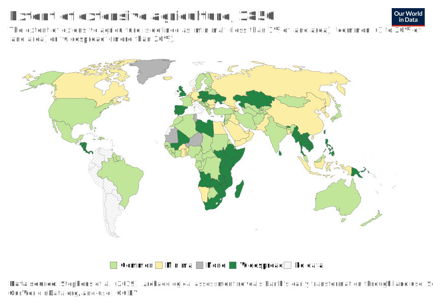

<!DOCTYPE html>
<html>

<head>
  <meta name="viewport" content="width=device-width, initial-scale=1">
  <title style="color: #007bff; font-family: Lato, sans-serif; text-shadow: 1px 1px 2px rgba(0, 0, 0, 0.2);">Land Resources</title>
  <meta name="description"
        content="How is humanity using the Earth’s land? And how can we decrease our land use so that more land is left for wildlife?">
  <link rel="canonical" href="https://ourworldindata.org/land-use">
  <link rel="alternate" type="application/atom+xml" href="/atom.xml" title="Atom feed for Our World in Data">
  <link rel="apple-touch-icon" sizes="180x180" href="images/apple-touch-icon.png">
  <link rel="preload" href="/fonts/LatoLatin-Regular.woff2" as="font" type="font/woff2" crossorigin="anonymous">
  <meta property="fb:app_id" content="1149943818390250">
  <meta property="og:url" content="https://ourworldindata.org/land-use">
  <meta property="og:title" content="Land Resources">
  <meta property="og:description"
        content="How is humanity using the Earth’s land? And how can we decrease our land use so that more land is left for wildlife?">
  <meta property="og:image" content="images/World-Map-by-Land-Use-01.png">
  <meta property="og:site_name" content="Our World in Data">
  <meta name="twitter:card" content="summary_large_image">
  <meta name="twitter:site" content="@OurWorldInData">
  <meta name="twitter:creator" content="@OurWorldInData">
  <meta name="twitter:title" content="Land Resources">
  <meta name="twitter:description"
        content="How is humanity using the Earth’s land? And how can we decrease our land use so that more land is left for wildlife?">
  <meta name="twitter:image" content="https://ourworldindata.org/images/published/World-Map-by-Land-Use-01.png">
  <link rel="modulepreload" href="/assets/owid.mjs">
  <link rel="preload"
        href="https://cdnjs.cloudflare.com/polyfill/v3/polyfill.min.js?features=es2019,es2020,es2021,es2022,IntersectionObserver,IntersectionObserverEntry,ResizeObserver,globalThis"
        as="script">
  <link rel="preload" href="/assets/owid.css" as="style">
  <link rel="stylesheet" href="css/owid.css">
  <meta name="citation_title" content="Land Resources">
  <meta name="citation_fulltext_html_url" content="https://ourworldindata.org/land-use">
  <meta name="citation_fulltext_world_readable" content="">
  <meta name="citation_publication_date" content="2024/04/18">
  <meta name="citation_journal_title" content="Our World in Data">
  <meta name="citation_journal_abbrev" content="Our World in Data">
  <meta name="citation_author" content="Hannah Ritchie">
  <meta name="citation_author" content="Max Roser">
  <script async="" src="js/gtm.js"></script>
  <style>
    body {
      background-color: lightblue;
      color: ; /* Dark blue for good contrast */
    }
    
    h1, h2, h3, h4, h5, h6 {
      color: inherit; /* Inherit the body text color */
      font-family: Lato, sans-serif; /* Consistent font for headings */
    }
  </style>
</head>

<body>
  </body>

</html>


    <script>window._OWID_GDOC_PROPS = { "slug": "land-use", "published": true, "createdAt": "2023-11-10T14:35:00.000Z", "publishedAt": "2019-09-01T13:35:57.000Z", "updatedAt": "2024-02-16T13:05:33.000Z", "revisionId": "ALBJ4Lt6Z9eM0gK3bAb6BWcSQ1CybCbnvUiTJLppUAXEtap7FLDjnjxYMB8He3ac8ivPSaMz99nAkYcZv7_q8g", "markdown": "The focus of this topic page is land use for agriculture. But we are also studying other uses of land, including land required for human settlement.\n\nAgriculture is a major use of land. Half of the world’s habitable land is used for agriculture. The extensive land use has a major impact on the earth's environment as it reduces wilderness and threatens biodiversity.\n\nReducing the consumption of resource-intensive products and increasing the productivity of land makes it possible to produce food with much smaller inputs and reducing the impact on the environment.\n\n**[See all interactive charts on Land Use ↓](#all-charts)**\n\n---\n\n# Breakdown of global land use today\n\n---\n\n## Half of the world's habitable land is used for agriculture\n\nThe most visible mark that humanity has left on the planet is the transformation of wild habitats into farmland.\n\nIf we rewind 1000 years, it is estimated that [only 4 million](https://ourworldindata.org/grapher/land-use-over-the-long-term) square kilometers – less than 4% of the world’s ice- and desert-free land was used for farming.\n\nIn the visualization we see the breakdown of global land area today. Around 10% is covered by glaciers, and a further 14% by deserts and other barren land. The rest is what researchers call ‘habitable land’.\n\nAlmost half (44%) of the world’s habitable land is used for agriculture.1 In total it is an area of 48 million square kilometers (km2). That’s around five times [the size](https://ourworldindata.org/grapher/land-area-km) of the United States.2\n\nCroplands make up one-third of agricultural land, and grazing land makes up the remaining two-thirds.3\n\nHowever, only half of the world’s croplands are used to grow crops that are consumed by humans directly. We use a lot of land to grow crops for biofuels and other industrial products, and an even bigger share is used to feed livestock.4\n\nIf we combine global grazing land with the amount of cropland used for animal feed, livestock accounts for 80% of agricultural land use. The vast majority of the world’s agricultural land is used to raise livestock for meat and dairy.\n\nCrops for humans account for 16%. And non-food crops for biofuels and textiles come to 4%.5\n\nDespite the vast amount of land used for livestock animals, they contribute quite a small share of the global calorie and protein supply. Meat, dairy and farmed fish provide just 17% of the world’s calories, and 38% of its protein.6\n\n<Image filename=\"Global-land-use-breakdown.png\"/>\n\nWe can also see the simple breakdown of how the world’s land is used in the chart below. As you can see, the area of land used for livestock – including grazing land and croplands for animal feed – is as large as the entire Americas.\n\nCroplands – used for direct human food and non-food uses such as biofuels – are as large as the land area of China.\n\n<Image filename=\"global-land-use-bar.png\"/>\n\n---\n\n# How has global land use changed over the long-term?\n\n---\n\nThe visualisation shows human land use over the long-term (since 10,000 BC), and details the change in total land used for cropland, grazing land and built-up/urban area in hectares. This can also be viewed by select countries and all regions using the \"change country/region\" option.\n\n<Chart url=\"https://ourworldindata.org/grapher/land-use-over-the-long-term\"/>\n\n---\n\n# Agricultural land use over the long-run\n\n---\n\n## Total agricultural land use\n\nThis visualisation shows total land used for agriculture (which is a combination of cropland and grazing land) over the long-term, measured in hectares. In the following sections you can find disaggregated data for cropland and grazing land change over time.\n\n<Chart url=\"https://ourworldindata.org/grapher/total-agricultural-area-over-the-long-term\"/>\n\n## Cropland use\n\nThis visualisation shows total cropland (which does not include land for grazing) over the long-term, measured in hectares.\n\n<Chart url=\"https://ourworldindata.org/grapher/cropland-use-over-the-long-term\"/>\n\n## Grazing land use\n\nThis visualisation shows total grazing land over the long-term, measured in hectares.\n\n<Chart url=\"https://ourworldindata.org/grapher/grazing-land-use-over-the-long-term\"/>\n\n---\n\n# How much land do countries use for agriculture?\n\n---\n\nWe use roughly half of global habitable land for agriculture. But how much of total land area is utilised for agriculture across the world? In the map here we see the share of total (both habitable and non-habitable) land area used for agriculture.\n\nThere is large variability in the share of land a given country uses for agriculture. Allocation ranges from less than ten percent, particularly across countries in Sub-Saharan Africa and the Scandinavian region to close to 80 percent across most regions (including the UK, Uruguay, South Africa, Nigeria and Saudi Arabia). It's important to note that this metric includes both land used for arable (cropland) production and pasture land for livestock grazing; this means that agriculture can consume a large share of land area, even in arid and semi-arid regions where extensive arable farming is not possible. We will explore this difference in cropland and pastureland in the following section.\n\nIf we view the map in \"chart\" mode, we see how the allocation of land to agriculture has changed over time across the global regions. The share of land used for agriculture has been slowly increasing across most of the world's regions over the past few decades. However, land use across Europe and Central Asia- particularly within the European Union (EU) zone- and North America has been declining.\n\n<Chart url=\"https://ourworldindata.org/grapher/share-of-land-area-used-for-agriculture\"/>\n\n## Arable agriculture (cropland)\n\nThere are two main uses of agricultural land: arable farming (which is land dedicated to growing crops), and pastureland (which includes meadows and pastures used for livestock rearing). In the chart here we see a global map of land used for arable agriculture (as a share of total land area).\n\nFor most countries, as we will show in the section below, land use for livestock grazing is dominant relative to arable farming. For most countries, land dedicated to cropland is typically below 20 percent, with many countries dedicating less than 10 percent. There are some notable exceptions, however;  countries in South Asia and Europe allocate a large share of land area to arable farming. India, Bangladesh, Ukraine and Denmark all dedicated more than half of total land area to cropland in 2015.\n\n<Chart url=\"https://ourworldindata.org/grapher/share-of-land-area-used-for-arable-agriculture\"/>\n\n## Pastureland (permanent meadows and pasture)\n\nFor most countries, the majority of agricultural land is used for livestock rearing in the form of pastureland. In the map here we see the share of permanent meadows and pasture as a percentage of total land area.\n\nAs a contrast to arable farming, land use for livestock in Europe and South Asia, in particular, is typically less than 20 percent. However, most continental regions have countries where pastureland reaches close to half of total land area. In some countries (particularly in Central Asia, including Mongolia, Kazakhstan, and Turkmenistan) this can reach up to 70 percent. Livestock farming can take place across a range of diverse climatic and environmental regions (for example, ranging from cattle rearing in temperate regions to sheep farming in hilly and semi-arid terrain); meaning that this type of agriculture is potentially less geographically-constrained than arable farming.\n\n<Chart url=\"https://ourworldindata.org/grapher/share-of-land-area-used-for-permanent-meadows-and-pastures-1961-2014\"/>\n\n---\n\n# Cropland use per person\n\n---\n\n## Cropland per person over the long-term\n\nThe visualisation here shows the change in the average cropland use per person over the long-term (since 10,000 BC), measured in hectares per person.\n\n<Chart url=\"https://ourworldindata.org/grapher/cropland-per-person-over-the-long-term\"/>\n\n## Cropland use per person in the near-term\n\nGlobal population has [more than doubled](https://ourworldindata.org/world-population-growth/) over the last 50 years. To meet the demands of a rapidly growing population on a planet with finite land resources, reducing our per capita land footprint is essential.\n\nIn the chart here we have plotted trends of the average arable land use per person across the world's regions. Overall we see that the arable land use per capita has declined across all regions since 1961. Per capita land use is highest in North America-- more than double the land use of any other region. Land use in Asia-- both in South and East Asia is lowest (5-6 times less than in North America). Rates of reduction in South Asia have been the most dramatic; per capita land use in 2014 was roughly one-third of its value in 1961.\n\n<Chart url=\"https://ourworldindata.org/grapher/arable-land-use-per-person\"/>\n\n---\n\n# Agricultural land use per person\n\n---\n\n## Agricultural land per person over the long-term\n\nThe visualisation shows the change in the average agricultural land use (which is the sum of cropland and grazing area) per person over the long-term (since 10,000 BC), measured in hectares per person.\n\n<Chart url=\"https://ourworldindata.org/grapher/total-agricultural-land-use-per-person\"/>\n\n## Agricultural land per person over the near-term\n\nIf we extend our land coverage above from arable land use to total agricultural land (which is the sum of arable, permanent crops and pastures and meadows), we still see overall declines in land per person but with different rates and patterns of reduction. Overall, we see that agricultural land per person is higher than that of arable land. At the global level, per capita agricultural land use is now less than half its value in 1961.\n\nAfrica in particular has seen dramatic reductions in agricultural land per person - now less than one-third of per capita land 50 years ago. The Americas (North and South) and Africa have notably higher per capita agricultural land use relative to Europe and Asia.\n\n<Chart url=\"https://ourworldindata.org/grapher/agricultural-area-per-capita\"/>\n\n---\n\n# Land use by crop\n\n---\n\nIn the chart here we see the global area of land use in agriculture by major crop types, from 1961 to 2014. Overall, we see that the majority of our arable land is used for cereal production; this has grown from around 650 to 720 million hectares (an area roughly twice the size of Germany) over this period. The total land area used for coarse grains has remained approximately constant over this 50 year period, and is the 2nd largest user of arable land.\n\nThe most dramatic increase in land allocation is in the production of oilcrops. Total land area used for oilcrop production has increased almost 3-fold since 1961-- an area just short of the size of Mexico. All other crop types take up less than 100 million hectares of global area.\n\n<Chart url=\"https://ourworldindata.org/grapher/global-agricultural-land-use-by-major-crop-type\"/>\n\n---\n\n# Land use by food type\n\n---\n\nThe amount of land required to produce food has wide variations depending on the product--this is especially true when differentiating crops and animal products. In the chart here we have plotted the average land required (sometimes termed the \"land footprint\") to produce one gram of protein across a range of food types.\n\nAt the bottom of the scale, we see that cereal crops typically have a small land impact per unit of protein (although such protein is often lacking in some essential amino acids). At the upper end of the spectrum we find meat products, with the land required for beef or mutton up to 100 times larger than cereals. However, it's important to note the differences in land required across the meat products: poultry and pork have a land footprint 8-10 times lower than that of beef. This means individuals can make notable reductions in the environmental impact of their diets simply by substituting lower-impact meat products for beef or mutton.\n\n<Chart url=\"https://ourworldindata.org/grapher/land-use-per-gram-of-protein-by-food-type\"/>\n\n## Arable land needed per unit of crop production\n\nThis visualization shows the index of the arable land area needed to produce an equivalent aggregate of crop production, relative to the land area needed in 1961 i.e. values in 1961 are equal to 1.0. For example, globally in 2014, the index value was 0.3; this means only 30% of the arable land area was needed to produce the same quantity of crops relative to 1961. 70% less land was needed.\n\nThis data can be viewed for other countries and regions by selecting 'add country' on the chart.\n\nThe crop production index (PIN) is the sum of crop commodities produced (after deductions of quantities used as seed and feed). It is weighted by the commodity prices. The FAO explains the construction of the PIN in detail [here](http://fenixservices.fao.org/faostat/static/documents/QI/QI_e.pdf).\n\nThe idea for this chart is taken from Ausubel, Wernick, and Waggoner (2013).7\n\nThe authors write:\n\n\n-- \n\n<Chart url=\"https://ourworldindata.org/grapher/arable-land-pin\"/>\n\n---\n\n# Definitions\n\n---\n\n## Land use categories\n\nThe following discussions on global land use (particularly in relation to agriculture) cover a number of definitions and combined categories. It is therefore useful to understand the differences between land use terminology; for example, the definition of \"arable land\" versus \"agricultural land\".\n\nTo provide some clarity on the definitions used here (and the common terminology within the literature) we have visualised these land use categories and groupings in the chart shown here. Also shown are the definitions of each. The groupings and definitions shown below are based on the UN Food and Agricultural Organization (FAO) and should therefore be consistent with most international data sources.\n\n<Image filename=\"Land-use-classification.png\" alt=\"\"/>\n\n## Definitions of agricultural land use\n\nThe Land Area of the World is 13,003 million ha. 4,889 million ha are classified as 'agricultural area' by the FAO (this is 37.6% of the Land Area).\n\nThe agricultural area use is divided into 3 categories: arable land (28% of the global agricultural area), permanent crops (3%) and permanent meadows and pastures (69%) which account for the largest share of the world's agricultural area.8\n\nWhat do these words mean?\n\nThe **agricultural area** is the sum of arable land, permanent crops, permanent meadows and pastures.\n\nThe FAO definition for **arable land** is land under temporary agricultural crops (multiple-cropped areas are counted only once), temporary meadows for mowing or pasture, land under market and kitchen gardens and land temporarily fallow (less than five years). The abandoned land resulting from shifting cultivation is not included in this category. Data for “Arable land” are not meant to indicate the amount of land that is potentially cultivable.'9\n\nThe same source defines **permanent crops **as follows: 'Permanent crops are divided into temporary and permanent crops. Permanent crops are sown or planted once, and then occupy the land for some years and need not be replanted after each annual harvest, such as cocoa, coffee and rubber. This category includes flowering shrubs, fruit trees, nut trees and vines, but excludes trees grown for wood or timber. And again from the same source the definition for _permanent meadows and pastures _is 'land used permanently (five years or more) to grow herbaceous forage crops, either cultivated or growing wild (wild prairie or grazing land).'\n\nThe FAO definition for **fallow land** is 'the cultivated land that is not seeded for one or more growing seasons. The maximum idle period is usually less than five years.'\n\n---\n\n# Data Sources\n\n---\n\n### FAO Statistical Database (FAOstat)\n\n* **Data:** Many indicators relating to food production, yields and land use – the full list is [here](http://www.fao.org/faostat/en/#data).\n* **Geographical coverage:** Global – by country and world region.\n* **Time span:** Since 1961.\n* **Available at:** Available for download [here](http://www.fao.org/faostat/en/#data).\n\n<AllCharts heading=\"Interactive charts on land use\"/>\n\nThis data is [sourced from](https://ourworldindata.org/grapher/breakdown-habitable-land?time=latest) the UN Food and Agriculture Organization. Other studies confirm this distribution of global land: in an analysis of how humans have transformed global land use in recent centuries, Ellis et al. (2010) found that by 2000, 55% of Earth’s ice-free (not simply habitable) land had been converted into cropland, pasture, and urban areas. This left only 45% as ‘natural’ or ‘semi-natural’ land.\n\nEllis, E. C., Klein Goldewijk, K., Siebert, S., Lightman, D., & Ramankutty, N. (2010). [Anthropogenic transformation of the biomes, 1700 to 2000](https://onlinelibrary.wiley.com/doi/abs/10.1111/j.1466-8238.2010.00540.x). _Global Ecology and Biogeography_, _19_(5), 589-606.\n\nThe major uncertainties – and explanation for discrepancies – in these assessments is the allocation of ‘rangelands’: in some regions it can be difficult to accurately quantify how much of rangelands are used for grazing, and how much is free from human pressure. Despite this uncertainty, most analyses tend to conclude that close to half of habitable land is used for agriculture.\n\nThe land area of the United States [is around](https://ourworldindata.org/grapher/land-area-km) 9.2 million km2. Multiplied by 5, gives us 46 million km2. Note that when inland water bodies, and coastal waters are included, the surface area of the US is 9.8 million km2. Agricultural land would then be 4.9 times the size of the US.\n\nThis data is also from the UN’s Food and Agricultural Organization. Cropland area is around 16 million km2 ([1.6 billion hectares](https://ourworldindata.org/grapher/cropland-area?tab=chart&country=~OWID_WRL)), which is one-third of 48 million km2.\n\nThe UN FAO does not provide breakdowns of the amount of _land_ directly devoted to feed, food, and industrial production. It does provide this in tonnage terms, however, converting this to area estimates is complex, especially when co-products are considered.\n\nTo get the breakdown of cropland areas, we have combined the UN FAO land use areas with the share of area given to food, feed and non-food uses from the [2018 paper in Science](https://www.science.org/doi/10.1126/science.aaq0216) from Joseph Poore and Thomas Nemecek. It is the largest meta-analysis of global food systems to date, covering 38,700 commercially viable farms in 119 countries and 40 products representing around 90% of global protein and calorie consumption.\n\nPoore and Nemecek estimate that 50% of croplands are used for human food; 38% is for livestock feed; and 12% is for non-food uses.\n\nYou can find this breakdown in table S10 of the paper’s Supplementary Information.\n\nThis is very similar to the animal feed figures reported in a [separate UN report](https://www.fao.org/3/ar591e/ar591e.pdf), which estimated that one-third of cropland area is used for feed production. We chose not to use these figures directly since they are unreferenced, and don’t provide further context of food and non-food uses. However, it does provide a useful cross-check that these sources find similar results.\n\nGrazing land for livestock can also be split between food and non-food products such as leather, hides and other industrial products. Poore and Nemecek (2018) estimate that 87% of grazing land is for meat and dairy production, and the remaining 13% is for non-food uses.\n\nAll of the following numbers come from the UN Food and Agriculture Organization (FAO). They can be found on its [FAOSTAT database](https://www.fao.org/faostat/en/#data).\n\n40% of the world’s protein [comes from](https://ourworldindata.org/grapher/daily-protein-supply-from-animal-and-plant-based-foods?stackMode=relative&country=~OWID_WRL) animal products, and 60% from plant-based foods. However, seafood is also included in animal products here. Around 57% of this [comes from aquaculture](https://ourworldindata.org/grapher/capture-and-aquaculture-production?stackMode=relative) – which requires some land to grow fish feed – while the other 43% is from wild catch, which does not use land.\n\nExcluding seafood, animal products account for 36% of the world’s protein supply. Based on FAO data, the average supply of protein from non-seafood animal products is 28 grams per person. From plant-based products, it’s 51 grams. That gives a breakdown of 36% from animal products, and 64% from plants.\n\nHowever, we need to include seafood from aquaculture as aquaculture requires land, as mentioned before. The average protein supply from seafood is 5.6 grams per person per day. If we assume 57% comes from aquaculture, that’s 3.2 grams of protein from seafood from aquaculture. Adding aquaculture protein to the protein supply from meat and dairy sums up to 31 grams of protein per person. The breakdown, then, is 38% protein from animal products, and 62% from plants.\n\nWhen we calculate these numbers for calories in the same way, we get 18% from animal products when _all_ seafood is included. However, when we exclude wild catch, this drops to 17%. The remaining 83% comes from plant-based foods.\n\nThis is very similar to the results presented in Poore and Nemecek (2018) which estimate 18% of calories from plants and 37% of protein from animal products.\n\nJesse H. Ausubel, Iddo K. Wernick, Paul E. Waggoner (2013) – Peak Farmland and the Prospect for Land Sparing. Population and Development Review, Volume 38, Issue Supplement s1, pages 221–242, February 2013. DOI: 10.1111/j.1728-4457.2013.00561.x. Online [here](http://onlinelibrary.wiley.com/doi/10.1111/j.1728-4457.2013.00561.x/abstract).\n\nThese numbers are taken from FAO (2013) – Statistical Yearbook. Table 4. Online [here](http://www.fao.org/docrep/018/i3107e/i3107e.PDF).\n\nFor comparison: The area of the USA, Canada and China are all short of 1,000 million ha (USA 963 million ha, China 932 million ha, Canada 909 million ha).\n\nThis is the definition given by the UN's Food and Agricultural Organization (FAO) in their glossary that is online [here](http://faostat.fao.org/site/375/default.aspx).", "publicationContext": "unlisted", "breadcrumbs": null, "tags": [{ "gdocId": "1NnQYCqC014s3RZjkmzx5e1PR9yGAx_9RgsGf4JsXhvI", "id": 90, "name": "Land Use", "createdAt": "2016-01-01T00:00:00.000Z", "updatedAt": "2023-12-04T19:58:21.000Z", "parentId": 1504, "isBulkImport": false, "specialType": null, "slug": "land-use" }], "errors": [], "imageMetadata": { "World-Map-by-Land-Use-01.png": { "id": 697, "googleId": "1x6usNmjNFV8kA-dXM5QjK3tPxeTPgACF", "filename": "World-Map-by-Land-Use-01.png", "defaultAlt": "legacy-wordpress-upload", "originalWidth": 6251, "updatedAt": 1696374617012, "originalHeight": 4695 }, "Global-land-use-breakdown.png": { "id": 1088, "googleId": "1fRCCkqyE9fx-JFyhz9MqnNreKnfcYqrh", "filename": "Global-land-use-breakdown.png", "defaultAlt": "Series of 6 bar charts showing the breakdown of global land. 45% of habitable land is used for farming. 80% of this is for livestock.", "originalWidth": 12544, "updatedAt": 1708088657566, "originalHeight": 8198 }, "global-land-use-bar.png": { "id": 1087, "googleId": "1aNrKMVZSBLjpPPB4A0ghUjMcCmJ63qQR", "filename": "global-land-use-bar.png", "defaultAlt": "Single bar chart showing the breakdown of global land use. Land for livestock is equal to the entire Americas. Croplands are equal to China.", "originalWidth": 11779, "updatedAt": 1708088199194, "originalHeight": 4654 }, "Land-use-classification.png": { "id": 696, "googleId": "1_-3ALQk1ADYcdikHIiCAISkVeR8tuwGY", "filename": "Land-use-classification.png", "defaultAlt": "legacy-wordpress-upload", "originalWidth": 3000, "updatedAt": 1696374280152, "originalHeight": 2014 } }, "linkedCharts": { "land-use-over-the-long-term": { "originalSlug": "land-use-over-the-long-term", "resolvedUrl": "https://ourworldindata.org/grapher/land-use-over-the-long-term", "tab": "chart", "queryString": "", "title": "Land use over the long-term", "thumbnail": "https://assets.ourworldindata.org/grapher/exports/land-use-over-the-long-term.svg", "tags": [] }, "land-area-km": { "originalSlug": "land-area-km", "resolvedUrl": "https://ourworldindata.org/grapher/land-area-km", "tab": "map", "queryString": "", "title": "Land area in square kilometres", "thumbnail": "https://assets.ourworldindata.org/grapher/exports/land-area-km.svg", "tags": [] }, "total-agricultural-area-over-the-long-term": { "originalSlug": "total-agricultural-area-over-the-long-term", "resolvedUrl": "https://ourworldindata.org/grapher/total-agricultural-area-over-the-long-term", "tab": "chart", "queryString": "", "title": "Agricultural area over the long-term", "thumbnail": "https://assets.ourworldindata.org/grapher/exports/total-agricultural-area-over-the-long-term.svg", "indicatorId": 821419, "tags": [] }, "cropland-use-over-the-long-term": { "originalSlug": "cropland-use-over-the-long-term", "resolvedUrl": "https://ourworldindata.org/grapher/cropland-use-over-the-long-term", "tab": "chart", "queryString": "", "title": "Cropland extent over the long-term", "thumbnail": "https://assets.ourworldindata.org/grapher/exports/cropland-use-over-the-long-term.svg", "indicatorId": 819339, "tags": [] }, "grazing-land-use-over-the-long-term": { "originalSlug": "grazing-land-use-over-the-long-term", "resolvedUrl": "https://ourworldindata.org/grapher/grazing-land-use-over-the-long-term", "tab": "chart", "queryString": "", "title": "Grazing land use over the long-term", "thumbnail": "https://assets.ourworldindata.org/grapher/exports/grazing-land-use-over-the-long-term.svg", "indicatorId": 819334, "tags": [] }, "share-of-land-area-used-for-agriculture": { "originalSlug": "share-of-land-area-used-for-agriculture", "resolvedUrl": "https://ourworldindata.org/grapher/share-of-land-area-used-for-agriculture", "tab": "chart", "queryString": "", "title": "Share of land area used for agriculture", "thumbnail": "https://assets.ourworldindata.org/grapher/exports/share-of-land-area-used-for-agriculture.svg", "tags": [] }, "share-of-land-area-used-for-arable-agriculture": { "originalSlug": "share-of-land-area-used-for-arable-agriculture", "resolvedUrl": "https://ourworldindata.org/grapher/share-of-land-area-used-for-arable-agriculture", "tab": "map", "queryString": "", "title": "Share of land area used for arable agriculture", "thumbnail": "https://assets.ourworldindata.org/grapher/exports/share-of-land-area-used-for-arable-agriculture.svg", "tags": [] }, "share-of-land-area-used-for-permanent-meadows-and-pastures-1961-2014": { "originalSlug": "share-of-land-area-used-for-permanent-meadows-and-pastures-1961-2014", "resolvedUrl": "https://ourworldindata.org/grapher/area-meadows-and-pastures", "tab": "map", "queryString": "", "title": "Share of land used for permanent meadows and pastures", "thumbnail": "https://assets.ourworldindata.org/grapher/exports/area-meadows-and-pastures.svg", "indicatorId": 832680, "tags": [] }, "cropland-per-person-over-the-long-term": { "originalSlug": "cropland-per-person-over-the-long-term", "resolvedUrl": "https://ourworldindata.org/grapher/cropland-per-person-over-the-long-term", "tab": "chart", "queryString": "", "title": "Cropland per person over the long-term", "thumbnail": "https://assets.ourworldindata.org/grapher/exports/cropland-per-person-over-the-long-term.svg", "indicatorId": 821421, "tags": [] }, "arable-land-use-per-person": { "originalSlug": "arable-land-use-per-person", "resolvedUrl": "https://ourworldindata.org/grapher/arable-land-use-per-person", "tab": "chart", "queryString": "", "title": "Arable land use per person", "thumbnail": "https://assets.ourworldindata.org/grapher/exports/arable-land-use-per-person.svg", "tags": [] }, "total-agricultural-land-use-per-person": { "originalSlug": "total-agricultural-land-use-per-person", "resolvedUrl": "https://ourworldindata.org/grapher/total-agricultural-land-use-per-person", "tab": "chart", "queryString": "", "title": "Agricultural land use per person", "thumbnail": "https://assets.ourworldindata.org/grapher/exports/total-agricultural-land-use-per-person.svg", "indicatorId": 821423, "tags": [] }, "agricultural-area-per-capita": { "originalSlug": "agricultural-area-per-capita", "resolvedUrl": "https://ourworldindata.org/grapher/agricultural-area-per-capita", "tab": "chart", "queryString": "", "title": "Agricultural land per capita", "thumbnail": "https://assets.ourworldindata.org/grapher/exports/agricultural-area-per-capita.svg", "indicatorId": 832493, "tags": [] }, "global-agricultural-land-use-by-major-crop-type": { "originalSlug": "global-agricultural-land-use-by-major-crop-type", "resolvedUrl": "https://ourworldindata.org/grapher/global-agricultural-land-use-by-major-crop-type", "tab": "chart", "queryString": "", "title": "Global agricultural land use by major crop type", "thumbnail": "https://assets.ourworldindata.org/grapher/exports/global-agricultural-land-use-by-major-crop-type.svg", "indicatorId": 848422, "tags": [] }, "land-use-per-gram-of-protein-by-food-type": { "originalSlug": "land-use-per-gram-of-protein-by-food-type", "resolvedUrl": "https://ourworldindata.org/grapher/land-use-protein-poore", "tab": "chart", "queryString": "", "title": "Land use per 100 grams of protein", "thumbnail": "https://assets.ourworldindata.org/grapher/exports/land-use-protein-poore.svg", "tags": [] }, "arable-land-pin": { "originalSlug": "arable-land-pin", "resolvedUrl": "https://ourworldindata.org/grapher/arable-land-pin", "tab": "chart", "queryString": "", "title": "Arable land needed to produce a fixed quantity of crops", "thumbnail": "https://assets.ourworldindata.org/grapher/exports/arable-land-pin.svg", "indicatorId": 848421, "tags": [] }, "breakdown-habitable-land": { "originalSlug": "breakdown-habitable-land", "resolvedUrl": "https://ourworldindata.org/grapher/breakdown-habitable-land", "tab": "chart", "queryString": "", "title": "Breakdown of habitable land area", "thumbnail": "https://assets.ourworldindata.org/grapher/exports/breakdown-habitable-land.svg", "tags": [] }, "daily-protein-supply-from-animal-and-plant-based-foods": { "originalSlug": "daily-protein-supply-from-animal-and-plant-based-foods", "resolvedUrl": "https://ourworldindata.org/grapher/daily-protein-supply-from-animal-and-plant-based-foods", "tab": "chart", "queryString": "", "title": "Daily protein supply from animal and plant-based foods", "thumbnail": "https://assets.ourworldindata.org/grapher/exports/daily-protein-supply-from-animal-and-plant-based-foods.svg", "tags": [] }, "capture-and-aquaculture-production": { "originalSlug": "capture-and-aquaculture-production", "resolvedUrl": "https://ourworldindata.org/grapher/capture-and-aquaculture-production", "tab": "chart", "queryString": "", "title": "Seafood production: wild fish catch vs. aquaculture", "thumbnail": "https://assets.ourworldindata.org/grapher/exports/capture-and-aquaculture-production.svg", "tags": [] }, "cropland-area": { "originalSlug": "cropland-area", "resolvedUrl": "https://ourworldindata.org/grapher/cropland-area", "tab": "map", "queryString": "", "title": "Cropland area", "thumbnail": "https://assets.ourworldindata.org/grapher/exports/cropland-area.svg", "indicatorId": 832572, "tags": [] } }, "linkedIndicators": { "819334": { "id": 819334, "title": "Grazing land use over the long-term" }, "819339": { "id": 819339, "title": "Cropland extent over the long-term" }, "821419": { "id": 821419, "title": "Agricultural area over the long-term" }, "821421": { "id": 821421, "title": "Cropland per person over the long-term" }, "821423": { "id": 821423, "title": "Agricultural land use per person" }, "832493": { "id": 832493, "title": "Agricultural land use per capita", "attributionShort": "FAO" }, "832572": { "id": 832572, "title": "Cropland area", "attributionShort": "FAO" }, "832680": { "id": 832680, "title": "Share of land used for permanent meadows and pastures", "attributionShort": "FAO" }, "848421": { "id": 848421, "title": "Arable land needed to produce a fixed quantity of crops", "attributionShort": "FAO" }, "848422": { "id": 848422, "title": "Global agricultural land use by major crop type", "attributionShort": "FAO" } }, "linkedDocuments": {}, "latestDataInsights": [], "relatedCharts": [{ "slug": "total-agricultural-area-over-the-long-term", "title": "Agricultural area over the long-term", "variantName": null, "keyChartLevel": 0 }, { "slug": "agricultural-area-per-capita", "title": "Agricultural land per capita", "variantName": "", "keyChartLevel": 0 }, { "slug": "agricultural-land", "title": "Agricultural land use", "variantName": null, "keyChartLevel": 2 }, { "slug": "total-agricultural-land-use-per-person", "title": "Agricultural land use per person", "variantName": null, "keyChartLevel": 0 }, { "slug": "arable-land-pin", "title": "Arable land needed to produce a fixed quantity of crops", "variantName": null, "keyChartLevel": 2 }, { "slug": "arable-land-use-per-person", "title": "Arable land use per person", "variantName": null, "keyChartLevel": 0 }, { "slug": "area-land-needed-to-global-oil", "title": "Area of land needed to meet global vegetable oil demand", "variantName": null, "keyChartLevel": 2 }, { "slug": "breakdown-habitable-land", "title": "Breakdown of habitable land area", "variantName": null, "keyChartLevel": 0 }, { "slug": "index-of-cereal-production-yield-and-land-use", "title": "Change in cereal production, yield, land use and population", "variantName": null, "keyChartLevel": 2 }, { "slug": "global-warming-land", "title": "Contribution to global mean surface temperature rise from agriculture and land use", "variantName": null, "keyChartLevel": 0 }, { "slug": "coverage-of-wetlands", "title": "Coverage of wetlands", "variantName": null, "keyChartLevel": 0 }, { "slug": "cropland-pasture-per-person", "title": "Cropland and pasture per person", "variantName": null, "keyChartLevel": 0 }, { "slug": "cropland-area", "title": "Cropland area", "variantName": null, "keyChartLevel": 0 }, { "slug": "cropland-use-over-the-long-term", "title": "Cropland extent over the long-term", "variantName": null, "keyChartLevel": 0 }, { "slug": "cropland-per-person-over-the-long-term", "title": "Cropland per person over the long-term", "variantName": null, "keyChartLevel": 0 }, { "slug": "dietary-land-use-vs-gdp-per-capita", "title": "Dietary land use vs. GDP per capita", "variantName": null, "keyChartLevel": 0 }, { "slug": "extent-of-extensive-agriculture", "title": "Extent of extensive agriculture", "variantName": null, "keyChartLevel": 2 }, { "slug": "extent-of-foraging", "title": "Extent of foraging, hunting and gathering", "variantName": null, "keyChartLevel": 2 }, { "slug": "extent-of-intensive-agriculture", "title": "Extent of intensive agriculture", "variantName": null, "keyChartLevel": 2 }, { "slug": "extent-of-pastoralism", "title": "Extent of pastoralism", "variantName": null, "keyChartLevel": 2 }, { "slug": "fao-projections-of-arable-land-to-2050", "title": "FAO projections of arable land", "variantName": null, "keyChartLevel": 0 }, { "slug": "global-agricultural-land-use-by-major-crop-type", "title": "Global agricultural land use by major crop type", "variantName": null, "keyChartLevel": 0 }, { "slug": "global-cropland", "title": "Global cropland is still increasing", "variantName": null, "keyChartLevel": 2 }, { "slug": "cereal-land-spared", "title": "Global land spared as a result of cereal yield improvements", "variantName": "", "keyChartLevel": 0 }, { "slug": "global-land-use-since-10000bc", "title": "Global land use since 10,000 BCE", "variantName": null, "keyChartLevel": 2 }, { "slug": "grazing-land-use-over-the-long-term", "title": "Grazing land use over the long-term", "variantName": null, "keyChartLevel": 0 }, { "slug": "global-peak-agricultural-land", "title": "Has the world passed peak agricultural land?", "variantName": null, "keyChartLevel": 2 }, { "slug": "land-sparing-by-crop", "title": "How much cropland has the world spared due to increases in crop yields?", "variantName": null, "keyChartLevel": 2 }, { "slug": "global-pasture", "title": "How much global land is used as pasture for livestock?", "variantName": null, "keyChartLevel": 2 }, { "slug": "agriculture-more-less-land", "title": "Is agricultural land expanding? Change over the prior decade", "variantName": null, "keyChartLevel": 2 }, { "slug": "land-area-hectares", "title": "Land area in hectares", "variantName": null, "keyChartLevel": 2 }, { "slug": "land-area-km", "title": "Land area in square kilometres", "variantName": null, "keyChartLevel": 2 }, { "slug": "land-area-per-crop-type", "title": "Land area per crop type", "variantName": null, "keyChartLevel": 2 }, { "slug": "land-use", "title": "Land use", "variantName": null, "keyChartLevel": 2 }, { "slug": "land-use-palm-oil", "title": "Land use for palm oil production", "variantName": null, "keyChartLevel": 2 }, { "slug": "land-use-for-vegetable-oil-crops", "title": "Land use for vegetable oil crops", "variantName": null, "keyChartLevel": 0 }, { "slug": "land-use-kcal-poore", "title": "Land use of foods per 1000 kilocalories", "variantName": null, "keyChartLevel": 2 }, { "slug": "land-use-over-the-long-term", "title": "Land use over the long-term", "variantName": null, "keyChartLevel": 2 }, { "slug": "land-use-protein-poore", "title": "Land use per 100 grams of protein", "variantName": null, "keyChartLevel": 2 }, { "slug": "land-use-per-kg-poore", "title": "Land use per kilogram of food product", "variantName": null, "keyChartLevel": 2 }, { "slug": "land-use-vs-yield-change-in-cereal-production", "title": "Land use vs. yield change in cereal production", "variantName": null, "keyChartLevel": 0 }, { "slug": "land-use-agriculture-longterm", "title": "Land used for agriculture", "variantName": null, "keyChartLevel": 0 }, { "slug": "organic-agricultural-area", "title": "Organic agricultural area", "variantName": "", "keyChartLevel": 0 }, { "slug": "projections-for-global-peak-agricultural-land", "title": "Projections for global peak agricultural land", "variantName": null, "keyChartLevel": 0 }, { "slug": "share-of-adults-who-perceive-their-rights-to-land-as-secure", "title": "Share of adults who perceive their rights to land as secure", "variantName": null, "keyChartLevel": 0 }, { "slug": "legally-recognized-rights-to-land", "title": "Share of adults with legal documentation of their rights to land", "variantName": null, "keyChartLevel": 0 }, { "slug": "share-of-arable-land-which-is-organic", "title": "Share of arable land which is organic", "variantName": null, "keyChartLevel": 0 }, { "slug": "share-deforestation-domestic-consumption", "title": "Share of deforestation that is driven by domestic consumption", "variantName": null, "keyChartLevel": 0 }, { "slug": "share-of-global-habitable-land-needed-for-agriculture-if-everyone-had-the-diet-of", "title": "Share of global habitable land needed for agriculture if everyone had the diet of...", "variantName": null, "keyChartLevel": 0 }, { "slug": "share-of-land-area-used-for-agriculture", "title": "Share of land area used for agriculture", "variantName": null, "keyChartLevel": 0 }, { "slug": "share-of-land-area-used-for-arable-agriculture", "title": "Share of land area used for arable agriculture", "variantName": null, "keyChartLevel": 0 }, { "slug": "share-of-land-covered-by-lakes-and-rivers", "title": "Share of land covered by lakes and rivers", "variantName": null, "keyChartLevel": 0 }, { "slug": "land-natural-share", "title": "Share of land defined as natural habitat", "variantName": null, "keyChartLevel": 2 }, { "slug": "share-degraded-land", "title": "Share of land that is degraded", "variantName": null, "keyChartLevel": 0 }, { "slug": "area-meadows-and-pastures", "title": "Share of land used for permanent meadows and pastures", "variantName": null, "keyChartLevel": 0 }, { "slug": "share-of-mountain-land-that-is-degraded", "title": "Share of mountain land that is degraded", "variantName": null, "keyChartLevel": 0 }, { "slug": "rural-land-below-5-meters", "title": "Share of rural land area where the elevation is 5 meters or less", "variantName": null, "keyChartLevel": 2 }, { "slug": "share-regions-with-land-use", "title": "Share of world regions with land use present", "variantName": null, "keyChartLevel": 2 }, { "slug": "terrain-ruggedness-index", "title": "Terrain Ruggedness Index", "variantName": null, "keyChartLevel": 0 }, { "slug": "tractors-per-100-square-kilometers-of-arable-land", "title": "Tractors per 100 square kilometers of arable land", "variantName": null, "keyChartLevel": 0 }], "content": { "toc": [{ "slug": "breakdown-of-global-land-use-today", "text": "Breakdown of global land use today", "title": "Breakdown of global land use today", "supertitle": "", "isSubheading": false }, { "slug": "half-of-the-world-s-habitable-land-is-used-for-agriculture", "text": "Half of the world's habitable land is used for agriculture", "title": "Half of the world's habitable land is used for agriculture", "supertitle": "", "isSubheading": true }, { "slug": "how-has-global-land-use-changed-over-the-long-term", "text": "How has global land use changed over the long-term?", "title": "How has global land use changed over the long-term?", "supertitle": "", "isSubheading": false }, { "slug": "agricultural-land-use-over-the-long-run", "text": "Agricultural land use over the long-run", "title": "Agricultural land use over the long-run", "supertitle": "", "isSubheading": false }, { "slug": "total-agricultural-land-use", "text": "Total agricultural land use", "title": "Total agricultural land use", "supertitle": "", "isSubheading": true }, { "slug": "cropland-use", "text": "Cropland use", "title": "Cropland use", "supertitle": "", "isSubheading": true }, { "slug": "grazing-land-use", "text": "Grazing land use", "title": "Grazing land use", "supertitle": "", "isSubheading": true }, { "slug": "how-much-land-do-countries-use-for-agriculture", "text": "How much land do countries use for agriculture?", "title": "How much land do countries use for agriculture?", "supertitle": "", "isSubheading": false }, { "slug": "arable-agriculture-cropland", "text": "Arable agriculture (cropland)", "title": "Arable agriculture (cropland)", "supertitle": "", "isSubheading": true }, { "slug": "pastureland-permanent-meadows-and-pasture", "text": "Pastureland (permanent meadows and pasture)", "title": "Pastureland (permanent meadows and pasture)", "supertitle": "", "isSubheading": true }, { "slug": "cropland-use-per-person", "text": "Cropland use per person", "title": "Cropland use per person", "supertitle": "", "isSubheading": false }, { "slug": "cropland-per-person-over-the-long-term", "text": "Cropland per person over the long-term", "title": "Cropland per person over the long-term", "supertitle": "", "isSubheading": true }, { "slug": "cropland-use-per-person-in-the-near-term", "text": "Cropland use per person in the near-term", "title": "Cropland use per person in the near-term", "supertitle": "", "isSubheading": true }, { "slug": "agricultural-land-use-per-person", "text": "Agricultural land use per person", "title": "Agricultural land use per person", "supertitle": "", "isSubheading": false }, { "slug": "agricultural-land-per-person-over-the-long-term", "text": "Agricultural land per person over the long-term", "title": "Agricultural land per person over the long-term", "supertitle": "", "isSubheading": true }, { "slug": "agricultural-land-per-person-over-the-near-term", "text": "Agricultural land per person over the near-term", "title": "Agricultural land per person over the near-term", "supertitle": "", "isSubheading": true }, { "slug": "land-use-by-crop", "text": "Land use by crop", "title": "Land use by crop", "supertitle": "", "isSubheading": false }, { "slug": "land-use-by-food-type", "text": "Land use by food type", "title": "Land use by food type", "supertitle": "", "isSubheading": false }, { "slug": "arable-land-needed-per-unit-of-crop-production", "text": "Arable land needed per unit of crop production", "title": "Arable land needed per unit of crop production", "supertitle": "", "isSubheading": true }, { "slug": "definitions", "text": "Definitions", "title": "Definitions", "supertitle": "", "isSubheading": false }, { "slug": "land-use-categories", "text": "Land use categories", "title": "Land use categories", "supertitle": "", "isSubheading": true }, { "slug": "definitions-of-agricultural-land-use", "text": "Definitions of agricultural land use", "title": "Definitions of agricultural land use", "supertitle": "", "isSubheading": true }, { "slug": "data-sources", "text": "Data Sources", "title": "Data Sources", "supertitle": "", "isSubheading": false }, { "slug": "all-charts", "text": "Interactive charts on land use", "title": "Interactive charts on land use", "isSubheading": false }, { "slug": "article-endnotes", "text": "Endnotes", "title": "Endnotes", "isSubheading": false }, { "slug": "article-citation", "text": "Citation", "title": "Citation", "isSubheading": false }, { "slug": "article-licence", "text": "Licence", "title": "Licence", "isSubheading": false }], "body": [{ "type": "text", "value": [{ "text": "The focus of this topic page is land use for agriculture. But we are also studying other uses of land, including land required for human settlement.", "spanType": "span-simple-text" }], "parseErrors": [] }, { "type": "text", "value": [{ "text": "Agriculture is a major use of land. Half of the world’s habitable land is used for agriculture. The extensive land use has a major impact on the earth's environment as it reduces wilderness and threatens biodiversity.", "spanType": "span-simple-text" }], "parseErrors": [] }, { "type": "text", "value": [{ "text": "Reducing the consumption of resource-intensive products and increasing the productivity of land makes it possible to produce food with much smaller inputs and reducing the impact on the environment.", "spanType": "span-simple-text" }], "parseErrors": [] }, { "type": "text", "value": [{ "children": [{ "url": "#all-charts", "children": [{ "text": "See all interactive charts on Land Use ↓", "spanType": "span-simple-text" }], "spanType": "span-link" }], "spanType": "span-bold" }], "parseErrors": [] }, { "type": "horizontal-rule", "value": {}, "parseErrors": [] }, { "text": [{ "text": "Breakdown of global land use today", "spanType": "span-simple-text" }], "type": "heading", "level": 1, "parseErrors": [] }, { "type": "horizontal-rule", "value": {}, "parseErrors": [] }, { "text": [{ "text": "Half of the world's habitable land is used for agriculture", "spanType": "span-simple-text" }], "type": "heading", "level": 2, "parseErrors": [] }, { "type": "text", "value": [{ "text": "The most visible mark that humanity has left on the planet is the transformation of wild habitats into farmland.", "spanType": "span-simple-text" }], "parseErrors": [] }, { "type": "text", "value": [{ "text": "If we rewind 1000 years, it is estimated that ", "spanType": "span-simple-text" }, { "url": "https://ourworldindata.org/grapher/land-use-over-the-long-term", "children": [{ "text": "only 4 million", "spanType": "span-simple-text" }], "spanType": "span-link" }, { "text": " square kilometers – less than 4% of the world’s ice- and desert-free land was used for farming.", "spanType": "span-simple-text" }], "parseErrors": [] }, { "type": "text", "value": [{ "text": "In the visualization we see the breakdown of global land area today. Around 10% is covered by glaciers, and a further 14% by deserts and other barren land. The rest is what researchers call ‘habitable land’.", "spanType": "span-simple-text" }], "parseErrors": [] }, { "type": "text", "value": [{ "text": "Almost half (44%) of the world’s habitable land is used for agriculture.", "spanType": "span-simple-text" }, { "url": "#note-1", "children": [{ "children": [{ "text": "1", "spanType": "span-simple-text" }], "spanType": "span-superscript" }], "spanType": "span-ref" }, { "text": " In total it is an area of 48 million square kilometers (km", "spanType": "span-simple-text" }, { "children": [{ "text": "2", "spanType": "span-simple-text" }], "spanType": "span-superscript" }, { "text": "). That’s around five times ", "spanType": "span-simple-text" }, { "url": "https://ourworldindata.org/grapher/land-area-km", "children": [{ "text": "the size", "spanType": "span-simple-text" }], "spanType": "span-link" }, { "text": " of the United States.", "spanType": "span-simple-text" }, { "url": "#note-2", "children": [{ "children": [{ "text": "2", "spanType": "span-simple-text" }], "spanType": "span-superscript" }], "spanType": "span-ref" }], "parseErrors": [] }, { "type": "text", "value": [{ "text": "Croplands make up one-third of agricultural land, and grazing land makes up the remaining two-thirds.", "spanType": "span-simple-text" }, { "url": "#note-3", "children": [{ "children": [{ "text": "3", "spanType": "span-simple-text" }], "spanType": "span-superscript" }], "spanType": "span-ref" }], "parseErrors": [] }, { "type": "text", "value": [{ "text": "However, only half of the world’s croplands are used to grow crops that are consumed by humans directly. We use a lot of land to grow crops for biofuels and other industrial products, and an even bigger share is used to feed livestock.", "spanType": "span-simple-text" }, { "url": "#note-4", "children": [{ "children": [{ "text": "4", "spanType": "span-simple-text" }], "spanType": "span-superscript" }], "spanType": "span-ref" }], "parseErrors": [] }, { "type": "text", "value": [{ "text": "If we combine global grazing land with the amount of cropland used for animal feed, livestock accounts for 80% of agricultural land use. The vast majority of the world’s agricultural land is used to raise livestock for meat and dairy.", "spanType": "span-simple-text" }], "parseErrors": [] }, { "type": "text", "value": [{ "text": "Crops for humans account for 16%. And non-food crops for biofuels and textiles come to 4%.", "spanType": "span-simple-text" }, { "url": "#note-5", "children": [{ "children": [{ "text": "5", "spanType": "span-simple-text" }], "spanType": "span-superscript" }], "spanType": "span-ref" }], "parseErrors": [] }, { "type": "text", "value": [{ "text": "Despite the vast amount of land used for livestock animals, they contribute quite a small share of the global calorie and protein supply. Meat, dairy and farmed fish provide just 17% of the world’s calories, and 38% of its protein.", "spanType": "span-simple-text" }, { "url": "#note-6", "children": [{ "children": [{ "text": "6", "spanType": "span-simple-text" }], "spanType": "span-superscript" }], "spanType": "span-ref" }], "parseErrors": [] }, { "size": "wide", "type": "image", "filename": "Global-land-use-breakdown.png", "parseErrors": [] }, { "type": "text", "value": [{ "text": "We can also see the simple breakdown of how the world’s land is used in the chart below. As you can see, the area of land used for livestock – including grazing land and croplands for animal feed – is as large as the entire Americas.", "spanType": "span-simple-text" }], "parseErrors": [] }, { "type": "text", "value": [{ "text": "Croplands – used for direct human food and non-food uses such as biofuels – are as large as the land area of China.", "spanType": "span-simple-text" }], "parseErrors": [] }, { "size": "wide", "type": "image", "filename": "global-land-use-bar.png", "parseErrors": [] }, { "type": "horizontal-rule", "value": {}, "parseErrors": [] }, { "text": [{ "text": "How has global land use changed over the long-term?", "spanType": "span-simple-text" }], "type": "heading", "level": 1, "parseErrors": [] }, { "type": "horizontal-rule", "value": {}, "parseErrors": [] }, { "type": "text", "value": [{ "text": "The visualisation shows human land use over the long-term (since 10,000 BC), and details the change in total land used for cropland, grazing land and built-up/urban area in hectares. This can also be viewed by select countries and all regions using the \"change country/region\" option.", "spanType": "span-simple-text" }], "parseErrors": [] }, { "url": "https://ourworldindata.org/grapher/land-use-over-the-long-term", "type": "chart", "parseErrors": [] }, { "type": "horizontal-rule", "value": {}, "parseErrors": [] }, { "text": [{ "text": "Agricultural land use over the long-run", "spanType": "span-simple-text" }], "type": "heading", "level": 1, "parseErrors": [] }, { "type": "horizontal-rule", "value": {}, "parseErrors": [] }, { "text": [{ "text": "Total agricultural land use", "spanType": "span-simple-text" }], "type": "heading", "level": 2, "parseErrors": [] }, { "type": "text", "value": [{ "text": "This visualisation shows total land used for agriculture (which is a combination of cropland and grazing land) over the long-term, measured in hectares. In the following sections you can find disaggregated data for cropland and grazing land change over time.", "spanType": "span-simple-text" }], "parseErrors": [] }, { "url": "https://ourworldindata.org/grapher/total-agricultural-area-over-the-long-term", "type": "chart", "parseErrors": [] }, { "text": [{ "text": "Cropland use", "spanType": "span-simple-text" }], "type": "heading", "level": 2, "parseErrors": [] }, { "type": "text", "value": [{ "text": "This visualisation shows total cropland (which does not include land for grazing) over the long-term, measured in hectares.", "spanType": "span-simple-text" }], "parseErrors": [] }, { "url": "https://ourworldindata.org/grapher/cropland-use-over-the-long-term", "type": "chart", "parseErrors": [] }, { "text": [{ "text": "Grazing land use", "spanType": "span-simple-text" }], "type": "heading", "level": 2, "parseErrors": [] }, { "type": "text", "value": [{ "text": "This visualisation shows total grazing land over the long-term, measured in hectares.", "spanType": "span-simple-text" }], "parseErrors": [] }, { "url": "https://ourworldindata.org/grapher/grazing-land-use-over-the-long-term", "type": "chart", "parseErrors": [] }, { "type": "horizontal-rule", "value": {}, "parseErrors": [] }, { "text": [{ "text": "How much land do countries use for agriculture?", "spanType": "span-simple-text" }], "type": "heading", "level": 1, "parseErrors": [] }, { "type": "horizontal-rule", "value": {}, "parseErrors": [] }, { "type": "text", "value": [{ "text": "We use roughly half of global habitable land for agriculture. But how much of total land area is utilised for agriculture across the world? In the map here we see the share of total (both habitable and non-habitable) land area used for agriculture.", "spanType": "span-simple-text" }], "parseErrors": [] }, { "type": "text", "value": [{ "text": "There is large variability in the share of land a given country uses for agriculture. Allocation ranges from less than ten percent, particularly across countries in Sub-Saharan Africa and the Scandinavian region to close to 80 percent across most regions (including the UK, Uruguay, South Africa, Nigeria and Saudi Arabia). It's important to note that this metric includes both land used for arable (cropland) production and pasture land for livestock grazing; this means that agriculture can consume a large share of land area, even in arid and semi-arid regions where extensive arable farming is not possible. We will explore this difference in cropland and pastureland in the following section.", "spanType": "span-simple-text" }], "parseErrors": [] }, { "type": "text", "value": [{ "text": "If we view the map in \"chart\" mode, we see how the allocation of land to agriculture has changed over time across the global regions. The share of land used for agriculture has been slowly increasing across most of the world's regions over the past few decades. However, land use across Europe and Central Asia- particularly within the European Union (EU) zone- and North America has been declining.", "spanType": "span-simple-text" }], "parseErrors": [] }, { "url": "https://ourworldindata.org/grapher/share-of-land-area-used-for-agriculture", "type": "chart", "parseErrors": [] }, { "text": [{ "text": "Arable agriculture (cropland)", "spanType": "span-simple-text" }], "type": "heading", "level": 2, "parseErrors": [] }, { "type": "text", "value": [{ "text": "There are two main uses of agricultural land: arable farming (which is land dedicated to growing crops), and pastureland (which includes meadows and pastures used for livestock rearing). In the chart here we see a global map of land used for arable agriculture (as a share of total land area).", "spanType": "span-simple-text" }], "parseErrors": [] }, { "type": "text", "value": [{ "text": "For most countries, as we will show in the section below, land use for livestock grazing is dominant relative to arable farming. For most countries, land dedicated to cropland is typically below 20 percent, with many countries dedicating less than 10 percent. There are some notable exceptions, however;  countries in South Asia and Europe allocate a large share of land area to arable farming. India, Bangladesh, Ukraine and Denmark all dedicated more than half of total land area to cropland in 2015.", "spanType": "span-simple-text" }], "parseErrors": [] }, { "url": "https://ourworldindata.org/grapher/share-of-land-area-used-for-arable-agriculture", "type": "chart", "parseErrors": [] }, { "text": [{ "text": "Pastureland (permanent meadows and pasture)", "spanType": "span-simple-text" }], "type": "heading", "level": 2, "parseErrors": [] }, { "type": "text", "value": [{ "text": "For most countries, the majority of agricultural land is used for livestock rearing in the form of pastureland. In the map here we see the share of permanent meadows and pasture as a percentage of total land area.", "spanType": "span-simple-text" }], "parseErrors": [] }, { "type": "text", "value": [{ "text": "As a contrast to arable farming, land use for livestock in Europe and South Asia, in particular, is typically less than 20 percent. However, most continental regions have countries where pastureland reaches close to half of total land area. In some countries (particularly in Central Asia, including Mongolia, Kazakhstan, and Turkmenistan) this can reach up to 70 percent. Livestock farming can take place across a range of diverse climatic and environmental regions (for example, ranging from cattle rearing in temperate regions to sheep farming in hilly and semi-arid terrain); meaning that this type of agriculture is potentially less geographically-constrained than arable farming.", "spanType": "span-simple-text" }], "parseErrors": [] }, { "url": "https://ourworldindata.org/grapher/share-of-land-area-used-for-permanent-meadows-and-pastures-1961-2014", "type": "chart", "parseErrors": [] }, { "type": "horizontal-rule", "value": {}, "parseErrors": [] }, { "text": [{ "text": "Cropland use per person", "spanType": "span-simple-text" }], "type": "heading", "level": 1, "parseErrors": [] }, { "type": "horizontal-rule", "value": {}, "parseErrors": [] }, { "text": [{ "text": "Cropland per person over the long-term", "spanType": "span-simple-text" }], "type": "heading", "level": 2, "parseErrors": [] }, { "type": "text", "value": [{ "text": "The visualisation here shows the change in the average cropland use per person over the long-term (since 10,000 BC), measured in hectares per person.", "spanType": "span-simple-text" }], "parseErrors": [] }, { "url": "https://ourworldindata.org/grapher/cropland-per-person-over-the-long-term", "type": "chart", "parseErrors": [] }, { "text": [{ "text": "Cropland use per person in the near-term", "spanType": "span-simple-text" }], "type": "heading", "level": 2, "parseErrors": [] }, { "type": "text", "value": [{ "text": "Global population has ", "spanType": "span-simple-text" }, { "url": "https://ourworldindata.org/world-population-growth/", "children": [{ "text": "more than doubled", "spanType": "span-simple-text" }], "spanType": "span-link" }, { "text": " over the last 50 years. To meet the demands of a rapidly growing population on a planet with finite land resources, reducing our per capita land footprint is essential.", "spanType": "span-simple-text" }], "parseErrors": [] }, { "type": "text", "value": [{ "text": "In the chart here we have plotted trends of the average arable land use per person across the world's regions. Overall we see that the arable land use per capita has declined across all regions since 1961. Per capita land use is highest in North America-- more than double the land use of any other region. Land use in Asia-- both in South and East Asia is lowest (5-6 times less than in North America). Rates of reduction in South Asia have been the most dramatic; per capita land use in 2014 was roughly one-third of its value in 1961.", "spanType": "span-simple-text" }], "parseErrors": [] }, { "url": "https://ourworldindata.org/grapher/arable-land-use-per-person", "type": "chart", "parseErrors": [] }, { "type": "horizontal-rule", "value": {}, "parseErrors": [] }, { "text": [{ "text": "Agricultural land use per person", "spanType": "span-simple-text" }], "type": "heading", "level": 1, "parseErrors": [] }, { "type": "horizontal-rule", "value": {}, "parseErrors": [] }, { "text": [{ "text": "Agricultural land per person over the long-term", "spanType": "span-simple-text" }], "type": "heading", "level": 2, "parseErrors": [] }, { "type": "text", "value": [{ "text": "The visualisation shows the change in the average agricultural land use (which is the sum of cropland and grazing area) per person over the long-term (since 10,000 BC), measured in hectares per person.", "spanType": "span-simple-text" }], "parseErrors": [] }, { "url": "https://ourworldindata.org/grapher/total-agricultural-land-use-per-person", "type": "chart", "parseErrors": [] }, { "text": [{ "text": "Agricultural land per person over the near-term", "spanType": "span-simple-text" }], "type": "heading", "level": 2, "parseErrors": [] }, { "type": "text", "value": [{ "text": "If we extend our land coverage above from arable land use to total agricultural land (which is the sum of arable, permanent crops and pastures and meadows), we still see overall declines in land per person but with different rates and patterns of reduction. Overall, we see that agricultural land per person is higher than that of arable land. At the global level, per capita agricultural land use is now less than half its value in 1961.", "spanType": "span-simple-text" }], "parseErrors": [] }, { "type": "text", "value": [{ "text": "Africa in particular has seen dramatic reductions in agricultural land per person - now less than one-third of per capita land 50 years ago. The Americas (North and South) and Africa have notably higher per capita agricultural land use relative to Europe and Asia.", "spanType": "span-simple-text" }], "parseErrors": [] }, { "url": "https://ourworldindata.org/grapher/agricultural-area-per-capita", "type": "chart", "parseErrors": [] }, { "type": "horizontal-rule", "value": {}, "parseErrors": [] }, { "text": [{ "text": "Land use by crop", "spanType": "span-simple-text" }], "type": "heading", "level": 1, "parseErrors": [] }, { "type": "horizontal-rule", "value": {}, "parseErrors": [] }, { "type": "text", "value": [{ "text": "In the chart here we see the global area of land use in agriculture by major crop types, from 1961 to 2014. Overall, we see that the majority of our arable land is used for cereal production; this has grown from around 650 to 720 million hectares (an area roughly twice the size of Germany) over this period. The total land area used for coarse grains has remained approximately constant over this 50 year period, and is the 2nd largest user of arable land.", "spanType": "span-simple-text" }], "parseErrors": [] }, { "type": "text", "value": [{ "text": "The most dramatic increase in land allocation is in the production of oilcrops. Total land area used for oilcrop production has increased almost 3-fold since 1961-- an area just short of the size of Mexico. All other crop types take up less than 100 million hectares of global area.", "spanType": "span-simple-text" }], "parseErrors": [] }, { "url": "https://ourworldindata.org/grapher/global-agricultural-land-use-by-major-crop-type", "type": "chart", "parseErrors": [] }, { "type": "horizontal-rule", "value": {}, "parseErrors": [] }, { "text": [{ "text": "Land use by food type", "spanType": "span-simple-text" }], "type": "heading", "level": 1, "parseErrors": [] }, { "type": "horizontal-rule", "value": {}, "parseErrors": [] }, { "type": "text", "value": [{ "text": "The amount of land required to produce food has wide variations depending on the product--this is especially true when differentiating crops and animal products. In the chart here we have plotted the average land required (sometimes termed the \"land footprint\") to produce one gram of protein across a range of food types.", "spanType": "span-simple-text" }], "parseErrors": [] }, { "type": "text", "value": [{ "text": "At the bottom of the scale, we see that cereal crops typically have a small land impact per unit of protein (although such protein is often lacking in some essential amino acids). At the upper end of the spectrum we find meat products, with the land required for beef or mutton up to 100 times larger than cereals. However, it's important to note the differences in land required across the meat products: poultry and pork have a land footprint 8-10 times lower than that of beef. This means individuals can make notable reductions in the environmental impact of their diets simply by substituting lower-impact meat products for beef or mutton.", "spanType": "span-simple-text" }], "parseErrors": [] }, { "url": "https://ourworldindata.org/grapher/land-use-per-gram-of-protein-by-food-type", "type": "chart", "parseErrors": [] }, { "text": [{ "text": "Arable land needed per unit of crop production", "spanType": "span-simple-text" }], "type": "heading", "level": 2, "parseErrors": [] }, { "type": "text", "value": [{ "text": "This visualization shows the index of the arable land area needed to produce an equivalent aggregate of crop production, relative to the land area needed in 1961 i.e. values in 1961 are equal to 1.0. For example, globally in 2014, the index value was 0.3; this means only 30% of the arable land area was needed to produce the same quantity of crops relative to 1961. 70% less land was needed.", "spanType": "span-simple-text" }], "parseErrors": [] }, { "type": "text", "value": [{ "text": "This data can be viewed for other countries and regions by selecting 'add country' on the chart.", "spanType": "span-simple-text" }], "parseErrors": [] }, { "type": "text", "value": [{ "text": "The crop production index (PIN) is the sum of crop commodities produced (after deductions of quantities used as seed and feed). It is weighted by the commodity prices. The FAO explains the construction of the PIN in detail ", "spanType": "span-simple-text" }, { "url": "http://fenixservices.fao.org/faostat/static/documents/QI/QI_e.pdf", "children": [{ "text": "here", "spanType": "span-simple-text" }], "spanType": "span-link" }, { "text": ".", "spanType": "span-simple-text" }], "parseErrors": [] }, { "type": "text", "value": [{ "text": "The idea for this chart is taken from Ausubel, Wernick, and Waggoner (2013).", "spanType": "span-simple-text" }, { "url": "#note-7", "children": [{ "children": [{ "text": "7", "spanType": "span-simple-text" }], "spanType": "span-superscript" }], "spanType": "span-ref" }], "parseErrors": [] }, { "type": "text", "value": [{ "text": "The authors write:", "spanType": "span-simple-text" }], "parseErrors": [] }, { "text": [{ "type": "text", "value": [{ "text": "A combination of agricultural technologies raised yields, keeping downward pressure on the extent of cropland, sparing land for nature.", "spanType": "span-simple-text" }], "parseErrors": [] }, { "type": "text", "value": [{ "text": "Countering the global rise of population and affluence by parents and workers, consumers and farmers restrained the expansion of arable land by changing tastes and lifting yields. The noticeable shrinkage in the extent of cropland as a function of the Crop Production index since 1990 provides encouragement that farmers will continue sparing land.", "spanType": "span-simple-text" }], "parseErrors": [] }], "type": "blockquote", "citation": "", "parseErrors": [] }, { "url": "https://ourworldindata.org/grapher/arable-land-pin", "type": "chart", "parseErrors": [] }, { "type": "horizontal-rule", "value": {}, "parseErrors": [] }, { "text": [{ "text": "Definitions", "spanType": "span-simple-text" }], "type": "heading", "level": 1, "parseErrors": [] }, { "type": "horizontal-rule", "value": {}, "parseErrors": [] }, { "text": [{ "text": "Land use categories", "spanType": "span-simple-text" }], "type": "heading", "level": 2, "parseErrors": [] }, { "type": "text", "value": [{ "text": "The following discussions on global land use (particularly in relation to agriculture) cover a number of definitions and combined categories. It is therefore useful to understand the differences between land use terminology; for example, the definition of \"arable land\" versus \"agricultural land\".", "spanType": "span-simple-text" }], "parseErrors": [] }, { "type": "text", "value": [{ "text": "To provide some clarity on the definitions used here (and the common terminology within the literature) we have visualised these land use categories and groupings in the chart shown here. Also shown are the definitions of each. The groupings and definitions shown below are based on the UN Food and Agricultural Organization (FAO) and should therefore be consistent with most international data sources.", "spanType": "span-simple-text" }], "parseErrors": [] }, { "alt": "", "size": "wide", "type": "image", "filename": "Land-use-classification.png", "parseErrors": [] }, { "text": [{ "text": "Definitions of agricultural land use", "spanType": "span-simple-text" }], "type": "heading", "level": 2, "parseErrors": [] }, { "type": "text", "value": [{ "text": "The Land Area of the World is 13,003 million ha. 4,889 million ha are classified as 'agricultural area' by the FAO (this is 37.6% of the Land Area).", "spanType": "span-simple-text" }], "parseErrors": [] }, { "type": "text", "value": [{ "text": "The agricultural area use is divided into 3 categories: arable land (28% of the global agricultural area), permanent crops (3%) and permanent meadows and pastures (69%) which account for the largest share of the world's agricultural area.", "spanType": "span-simple-text" }, { "url": "#note-8", "children": [{ "children": [{ "text": "8", "spanType": "span-simple-text" }], "spanType": "span-superscript" }], "spanType": "span-ref" }], "parseErrors": [] }, { "type": "text", "value": [{ "text": "What do these words mean?", "spanType": "span-simple-text" }], "parseErrors": [] }, { "type": "text", "value": [{ "text": "The ", "spanType": "span-simple-text" }, { "children": [{ "text": "agricultural area", "spanType": "span-simple-text" }], "spanType": "span-bold" }, { "text": " is the sum of arable land, permanent crops, permanent meadows and pastures.", "spanType": "span-simple-text" }], "parseErrors": [] }, { "type": "text", "value": [{ "text": "The FAO definition for ", "spanType": "span-simple-text" }, { "children": [{ "text": "arable land", "spanType": "span-simple-text" }], "spanType": "span-bold" }, { "text": " is land under temporary agricultural crops (multiple-cropped areas are counted only once), temporary meadows for mowing or pasture, land under market and kitchen gardens and land temporarily fallow (less than five years). The abandoned land resulting from shifting cultivation is not included in this category. Data for “Arable land” are not meant to indicate the amount of land that is potentially cultivable.'", "spanType": "span-simple-text" }, { "url": "#note-9", "children": [{ "children": [{ "text": "9", "spanType": "span-simple-text" }], "spanType": "span-superscript" }], "spanType": "span-ref" }], "parseErrors": [] }, { "type": "text", "value": [{ "text": "The same source defines ", "spanType": "span-simple-text" }, { "children": [{ "text": "permanent crops ", "spanType": "span-simple-text" }], "spanType": "span-bold" }, { "text": "as follows: 'Permanent crops are divided into temporary and permanent crops. Permanent crops are sown or planted once, and then occupy the land for some years and need not be replanted after each annual harvest, such as cocoa, coffee and rubber. This category includes flowering shrubs, fruit trees, nut trees and vines, but excludes trees grown for wood or timber. And again from the same source the definition for ", "spanType": "span-simple-text" }, { "children": [{ "text": "permanent meadows and pastures ", "spanType": "span-simple-text" }], "spanType": "span-italic" }, { "text": "is 'land used permanently (five years or more) to grow herbaceous forage crops, either cultivated or growing wild (wild prairie or grazing land).'", "spanType": "span-simple-text" }], "parseErrors": [] }, { "type": "text", "value": [{ "text": "The FAO definition for ", "spanType": "span-simple-text" }, { "children": [{ "text": "fallow land", "spanType": "span-simple-text" }], "spanType": "span-bold" }, { "text": " is 'the cultivated land that is not seeded for one or more growing seasons. The maximum idle period is usually less than five years.'", "spanType": "span-simple-text" }], "parseErrors": [] }, { "type": "horizontal-rule", "value": {}, "parseErrors": [] }, { "text": [{ "text": "Data Sources", "spanType": "span-simple-text" }], "type": "heading", "level": 1, "parseErrors": [] }, { "type": "horizontal-rule", "value": {}, "parseErrors": [] }, { "text": [{ "text": "FAO Statistical Database (FAOstat)", "spanType": "span-simple-text" }], "type": "heading", "level": 3, "parseErrors": [] }, { "type": "list", "items": [{ "type": "text", "value": [{ "children": [{ "text": "Data:", "spanType": "span-simple-text" }], "spanType": "span-bold" }, { "text": " Many indicators relating to food production, yields and land use – the full list is ", "spanType": "span-simple-text" }, { "url": "http://www.fao.org/faostat/en/#data", "children": [{ "text": "here", "spanType": "span-simple-text" }], "spanType": "span-link" }, { "text": ".", "spanType": "span-simple-text" }], "parseErrors": [] }, { "type": "text", "value": [{ "children": [{ "text": "Geographical coverage:", "spanType": "span-simple-text" }], "spanType": "span-bold" }, { "text": " Global – by country and world region.", "spanType": "span-simple-text" }], "parseErrors": [] }, { "type": "text", "value": [{ "children": [{ "text": "Time span:", "spanType": "span-simple-text" }], "spanType": "span-bold" }, { "text": " Since 1961.", "spanType": "span-simple-text" }], "parseErrors": [] }, { "type": "text", "value": [{ "children": [{ "text": "Available at:", "spanType": "span-simple-text" }], "spanType": "span-bold" }, { "text": " Available for download ", "spanType": "span-simple-text" }, { "url": "http://www.fao.org/faostat/en/#data", "children": [{ "text": "here", "spanType": "span-simple-text" }], "spanType": "span-link" }, { "text": ".", "spanType": "span-simple-text" }], "parseErrors": [] }], "parseErrors": [] }, { "top": [], "type": "all-charts", "heading": "Interactive charts on land use", "parseErrors": [] }], "refs": { "errors": [], "definitions": { "0d59cd7cc3bc10e7ac2da8e8c3464d19d3a603cb": { "id": "0d59cd7cc3bc10e7ac2da8e8c3464d19d3a603cb", "index": 1, "content": [{ "type": "text", "value": [{ "text": "The land area of the United States ", "spanType": "span-simple-text" }, { "url": "https://ourworldindata.org/grapher/land-area-km", "children": [{ "text": "is around", "spanType": "span-simple-text" }], "spanType": "span-link" }, { "text": " 9.2 million km", "spanType": "span-simple-text" }, { "children": [{ "text": "2", "spanType": "span-simple-text" }], "spanType": "span-superscript" }, { "text": ". Multiplied by 5, gives us 46 million km", "spanType": "span-simple-text" }, { "children": [{ "text": "2", "spanType": "span-simple-text" }], "spanType": "span-superscript" }, { "text": ". Note that when inland water bodies, and coastal waters are included, the surface area of the US is 9.8 million km", "spanType": "span-simple-text" }, { "children": [{ "text": "2", "spanType": "span-simple-text" }], "spanType": "span-superscript" }, { "text": ". Agricultural land would then be 4.9 times the size of the US.", "spanType": "span-simple-text" }], "parseErrors": [] }], "parseErrors": [] }, "29c4581ff209d4737b02a52fac09fa71443e848f": { "id": "29c4581ff209d4737b02a52fac09fa71443e848f", "index": 0, "content": [{ "type": "text", "value": [{ "text": "This data is ", "spanType": "span-simple-text" }, { "url": "https://ourworldindata.org/grapher/breakdown-habitable-land?time=latest", "children": [{ "text": "sourced from", "spanType": "span-simple-text" }], "spanType": "span-link" }, { "text": " the UN Food and Agriculture Organization. Other studies confirm this distribution of global land: in an analysis of how humans have transformed global land use in recent centuries, Ellis et al. (2010) found that by 2000, 55% of Earth’s ice-free (not simply habitable) land had been converted into cropland, pasture, and urban areas. This left only 45% as ‘natural’ or ‘semi-natural’ land.", "spanType": "span-simple-text" }], "parseErrors": [] }, { "type": "text", "value": [{ "text": "Ellis, E. C., Klein Goldewijk, K., Siebert, S., Lightman, D., & Ramankutty, N. (2010). ", "spanType": "span-simple-text" }, { "url": "https://onlinelibrary.wiley.com/doi/abs/10.1111/j.1466-8238.2010.00540.x", "children": [{ "text": "Anthropogenic transformation of the biomes, 1700 to 2000", "spanType": "span-simple-text" }], "spanType": "span-link" }, { "text": ". ", "spanType": "span-simple-text" }, { "children": [{ "text": "Global Ecology and Biogeography", "spanType": "span-simple-text" }], "spanType": "span-italic" }, { "text": ", ", "spanType": "span-simple-text" }, { "children": [{ "text": "19", "spanType": "span-simple-text" }], "spanType": "span-italic" }, { "text": "(5), 589-606.", "spanType": "span-simple-text" }], "parseErrors": [] }, { "type": "text", "value": [{ "text": "The major uncertainties – and explanation for discrepancies – in these assessments is the allocation of ‘rangelands’: in some regions it can be difficult to accurately quantify how much of rangelands are used for grazing, and how much is free from human pressure. Despite this uncertainty, most analyses tend to conclude that close to half of habitable land is used for agriculture.", "spanType": "span-simple-text" }], "parseErrors": [] }], "parseErrors": [] }, "315798b222e1a7b81201dbe72b357da1d0c643a3": { "id": "315798b222e1a7b81201dbe72b357da1d0c643a3", "index": 5, "content": [{ "type": "text", "value": [{ "text": "All of the following numbers come from the UN Food and Agriculture Organization (FAO). They can be found on its ", "spanType": "span-simple-text" }, { "url": "https://www.fao.org/faostat/en/#data", "children": [{ "text": "FAOSTAT database", "spanType": "span-simple-text" }], "spanType": "span-link" }, { "text": ".", "spanType": "span-simple-text" }], "parseErrors": [] }, { "type": "text", "value": [{ "text": "40% of the world’s protein ", "spanType": "span-simple-text" }, { "url": "https://ourworldindata.org/grapher/daily-protein-supply-from-animal-and-plant-based-foods?stackMode=relative&country=~OWID_WRL", "children": [{ "text": "comes from", "spanType": "span-simple-text" }], "spanType": "span-link" }, { "text": " animal products, and 60% from plant-based foods. However, seafood is also included in animal products here. Around 57% of this ", "spanType": "span-simple-text" }, { "url": "https://ourworldindata.org/grapher/capture-and-aquaculture-production?stackMode=relative", "children": [{ "text": "comes from aquaculture", "spanType": "span-simple-text" }], "spanType": "span-link" }, { "text": " – which requires some land to grow fish feed – while the other 43% is from wild catch, which does not use land.", "spanType": "span-simple-text" }], "parseErrors": [] }, { "type": "text", "value": [{ "text": "Excluding seafood, animal products account for 36% of the world’s protein supply. Based on FAO data, the average supply of protein from non-seafood animal products is 28 grams per person. From plant-based products, it’s 51 grams. That gives a breakdown of 36% from animal products, and 64% from plants.", "spanType": "span-simple-text" }], "parseErrors": [] }, { "type": "text", "value": [{ "text": "However, we need to include seafood from aquaculture as aquaculture requires land, as mentioned before. The average protein supply from seafood is 5.6 grams per person per day. If we assume 57% comes from aquaculture, that’s 3.2 grams of protein from seafood from aquaculture. Adding aquaculture protein to the protein supply from meat and dairy sums up to 31 grams of protein per person. The breakdown, then, is 38% protein from animal products, and 62% from plants.", "spanType": "span-simple-text" }], "parseErrors": [] }, { "type": "text", "value": [{ "text": "When we calculate these numbers for calories in the same way, we get 18% from animal products when ", "spanType": "span-simple-text" }, { "children": [{ "text": "all", "spanType": "span-simple-text" }], "spanType": "span-italic" }, { "text": " seafood is included. However, when we exclude wild catch, this drops to 17%. The remaining 83% comes from plant-based foods.", "spanType": "span-simple-text" }], "parseErrors": [] }, { "type": "text", "value": [{ "text": "This is very similar to the results presented in Poore and Nemecek (2018) which estimate 18% of calories from plants and 37% of protein from animal products.", "spanType": "span-simple-text" }], "parseErrors": [] }], "parseErrors": [] }, "54b78e197cef6acd8ad36c1a9bfcb1196a2b1990": { "id": "54b78e197cef6acd8ad36c1a9bfcb1196a2b1990", "index": 7, "content": [{ "type": "text", "value": [{ "text": "These numbers are taken from FAO (2013) – Statistical Yearbook. Table 4. Online ", "spanType": "span-simple-text" }, { "url": "http://www.fao.org/docrep/018/i3107e/i3107e.PDF", "children": [{ "text": "here", "spanType": "span-simple-text" }], "spanType": "span-link" }, { "text": ".", "spanType": "span-simple-text" }], "parseErrors": [] }, { "type": "text", "value": [{ "text": "For comparison: The area of the USA, Canada and China are all short of 1,000 million ha (USA 963 million ha, China 932 million ha, Canada 909 million ha).", "spanType": "span-simple-text" }], "parseErrors": [] }], "parseErrors": [] }, "617f297364883e8578de383b28f312a559e1e7d1": { "id": "617f297364883e8578de383b28f312a559e1e7d1", "index": 3, "content": [{ "type": "text", "value": [{ "text": "The UN FAO does not provide breakdowns of the amount of ", "spanType": "span-simple-text" }, { "children": [{ "text": "land", "spanType": "span-simple-text" }], "spanType": "span-italic" }, { "text": " directly devoted to feed, food, and industrial production. It does provide this in tonnage terms, however, converting this to area estimates is complex, especially when co-products are considered.", "spanType": "span-simple-text" }], "parseErrors": [] }, { "type": "text", "value": [{ "text": "To get the breakdown of cropland areas, we have combined the UN FAO land use areas with the share of area given to food, feed and non-food uses from the ", "spanType": "span-simple-text" }, { "url": "https://www.science.org/doi/10.1126/science.aaq0216", "children": [{ "text": "2018 paper in Science", "spanType": "span-simple-text" }], "spanType": "span-link" }, { "text": " from Joseph Poore and Thomas Nemecek. It is the largest meta-analysis of global food systems to date, covering 38,700 commercially viable farms in 119 countries and 40 products representing around 90% of global protein and calorie consumption.", "spanType": "span-simple-text" }], "parseErrors": [] }, { "type": "text", "value": [{ "text": "Poore and Nemecek estimate that 50% of croplands are used for human food; 38% is for livestock feed; and 12% is for non-food uses.", "spanType": "span-simple-text" }], "parseErrors": [] }, { "type": "text", "value": [{ "text": "You can find this breakdown in table S10 of the paper’s Supplementary Information.", "spanType": "span-simple-text" }], "parseErrors": [] }, { "type": "text", "value": [{ "text": "This is very similar to the animal feed figures reported in a ", "spanType": "span-simple-text" }, { "url": "https://www.fao.org/3/ar591e/ar591e.pdf", "children": [{ "text": "separate UN report", "spanType": "span-simple-text" }], "spanType": "span-link" }, { "text": ", which estimated that one-third of cropland area is used for feed production. We chose not to use these figures directly since they are unreferenced, and don’t provide further context of food and non-food uses. However, it does provide a useful cross-check that these sources find similar results.", "spanType": "span-simple-text" }], "parseErrors": [] }], "parseErrors": [] }, "74540a4dd61acc7dfdd49f257499aae6d19f27b9": { "id": "74540a4dd61acc7dfdd49f257499aae6d19f27b9", "index": 2, "content": [{ "type": "text", "value": [{ "text": "This data is also from the UN’s Food and Agricultural Organization. Cropland area is around 16 million km", "spanType": "span-simple-text" }, { "children": [{ "text": "2", "spanType": "span-simple-text" }], "spanType": "span-superscript" }, { "text": " (", "spanType": "span-simple-text" }, { "url": "https://ourworldindata.org/grapher/cropland-area?tab=chart&country=~OWID_WRL", "children": [{ "text": "1.6 billion hectares", "spanType": "span-simple-text" }], "spanType": "span-link" }, { "text": "), which is one-third of 48 million km", "spanType": "span-simple-text" }, { "children": [{ "text": "2", "spanType": "span-simple-text" }], "spanType": "span-superscript" }, { "text": ".", "spanType": "span-simple-text" }], "parseErrors": [] }], "parseErrors": [] }, "af956d6c1f4e94ff89d1dae7d6c67ba25294d8c7": { "id": "af956d6c1f4e94ff89d1dae7d6c67ba25294d8c7", "index": 6, "content": [{ "type": "text", "value": [{ "text": "Jesse H. Ausubel, Iddo K. Wernick, Paul E. Waggoner (2013) – Peak Farmland and the Prospect for Land Sparing. Population and Development Review, Volume 38, Issue Supplement s1, pages 221–242, February 2013. DOI: 10.1111/j.1728-4457.2013.00561.x. Online ", "spanType": "span-simple-text" }, { "url": "http://onlinelibrary.wiley.com/doi/10.1111/j.1728-4457.2013.00561.x/abstract", "children": [{ "text": "here", "spanType": "span-simple-text" }], "spanType": "span-link" }, { "text": ".", "spanType": "span-simple-text" }], "parseErrors": [] }], "parseErrors": [] }, "b3a76d3ccd1d55cf48ffc560099d16484ae1a324": { "id": "b3a76d3ccd1d55cf48ffc560099d16484ae1a324", "index": 4, "content": [{ "type": "text", "value": [{ "text": "Grazing land for livestock can also be split between food and non-food products such as leather, hides and other industrial products. Poore and Nemecek (2018) estimate that 87% of grazing land is for meat and dairy production, and the remaining 13% is for non-food uses.", "spanType": "span-simple-text" }], "parseErrors": [] }], "parseErrors": [] }, "ef29435e573c0add88964bdfd238b4ec304c3f13": { "id": "ef29435e573c0add88964bdfd238b4ec304c3f13", "index": 8, "content": [{ "type": "text", "value": [{ "text": "This is the definition given by the UN's Food and Agricultural Organization (FAO) in their glossary that is online ", "spanType": "span-simple-text" }, { "url": "http://faostat.fao.org/site/375/default.aspx", "children": [{ "text": "here", "spanType": "span-simple-text" }], "spanType": "span-link" }, { "text": ".", "spanType": "span-simple-text" }], "parseErrors": [] }], "parseErrors": [] } } }, "type": "linear-topic-page", "title": "Land Use", "authors": ["k23EC Students,Name: Saif siddique(21) , Atif khan(20),Hari Prakash(19)"], "excerpt": "How is humanity using the Earth’s land? And how can we decrease our land use so that more land is left for wildlife?", "dateline": "", "subtitle": "How is humanity using the Earth’s land? And how can we decrease our land use so that more land is left for wildlife?", "sidebar-toc": true, "featured-image": "World-Map-by-Land-Use-01.png" }, "id": "1NnQYCqC014s3RZjkmzx5e1PR9yGAx_9RgsGf4JsXhvI" }</script>
    <script>/* Prepare Google Tag Manager */
        window.dataLayer = window.dataLayer || [];
        function gtag() { dataLayer.push(arguments); }
        gtag("consent", "default", { "ad_storage": "denied", "analytics_storage": "denied", "wait_for_update": 1000 });
    </script>
    <script>/* Load Google Tag Manager */
        (function (w, d, s, l, i) {
            w[l] = w[l] || []; w[l].push({
                'gtm.start':
                    new Date().getTime(), event: 'gtm.js'
            }); var f = d.getElementsByTagName(s)[0],
                j = d.createElement(s), dl = l != 'dataLayer' ? '&l=' + l : ''; j.async = true; j.src =
                    'https://www.googletagmanager.com/gtm.js?id=' + i + dl; f.parentNode.insertBefore(j, f);
        })(window, document, 'script', 'dataLayer', 'GTM-N2D4V8S');</script>
</head>
<div id="owid-document-root">
    <div id="gdoc-admin-bar"><a href="#" id="gdoc-link">Gdoc</a><span>/</span><a href="#" id="admin-link">Admin</a>
    </div>
    <article
        class="centered-article-container grid grid-cols-12-full-width centered-article-container--linear-topic-page">
        <header class="topic-page-header grid span-cols-14 grid-cols-12-full-width">
            <h1
                class="display-1-semibold col-start-5 span-cols-6 col-md-start-3 span-md-cols-10 span-sm-cols-12 col-sm-start-2">
                Land Use</h1>
            <p
                class="topic-page-header__subtitle body-1-regular col-start-5 span-cols-6 col-md-start-3 span-md-cols-10 span-sm-cols-12 col-sm-start-2">
                How is humanity using the Earth’s land? And how can we decrease our land use so that more land is left
                for wildlife?</p>
            <p
                class="topic-page-header__byline col-start-5 span-cols-6 col-md-start-3 span-md-cols-10 span-sm-cols-12 col-sm-start-2">
        </header>
        <div class="toc-wrapper">
            <aside class="entry-sidebar">
                <nav class="entry-toc">
                    <ul>
                        <li><a href="#" data-track-note="toc_header">Land Use</a></li>
                        <li class="section"><a href="#breakdown-of-global-land-use-today"
                                data-track-note="toc_link">Breakdown of global land use today</a></li>
                        <li class="subsection"><a href="#half-of-the-world-s-habitable-land-is-used-for-agriculture"
                                data-track-note="toc_link">Half of the world's habitable land is used for
                                agriculture</a></li>
                        <li class="section"><a href="#how-has-global-land-use-changed-over-the-long-term"
                                data-track-note="toc_link">How has global land use changed over the long-term?</a></li>
                        <li class="section"><a href="#agricultural-land-use-over-the-long-run"
                                data-track-note="toc_link">Agricultural land use over the long-run</a></li>
                        <li class="subsection"><a href="#total-agricultural-land-use" data-track-note="toc_link">Total
                                agricultural land use</a></li>
                        <li class="subsection"><a href="#cropland-use" data-track-note="toc_link">Cropland use</a></li>
                        <li class="subsection"><a href="#grazing-land-use" data-track-note="toc_link">Grazing land
                                use</a></li>
                        <li class="section"><a href="#how-much-land-do-countries-use-for-agriculture"
                                data-track-note="toc_link">How much land do countries use for agriculture?</a></li>
                        <li class="subsection"><a href="#arable-agriculture-cropland" data-track-note="toc_link">Arable
                                agriculture (cropland)</a></li>
                        <li class="subsection"><a href="#pastureland-permanent-meadows-and-pasture"
                                data-track-note="toc_link">Pastureland (permanent meadows and pasture)</a></li>
                        <li class="section"><a href="#cropland-use-per-person" data-track-note="toc_link">Cropland use
                                per person</a></li>
                        <li class="subsection"><a href="#cropland-per-person-over-the-long-term"
                                data-track-note="toc_link">Cropland per person over the long-term</a></li>
                        <li class="subsection"><a href="#cropland-use-per-person-in-the-near-term"
                                data-track-note="toc_link">Cropland use per person in the near-term</a></li>
                        <li class="section"><a href="#agricultural-land-use-per-person"
                                data-track-note="toc_link">Agricultural land use per person</a></li>
                        <li class="subsection"><a href="#agricultural-land-per-person-over-the-long-term"
                                data-track-note="toc_link">Agricultural land per person over the long-term</a></li>
                        <li class="subsection"><a href="#agricultural-land-per-person-over-the-near-term"
                                data-track-note="toc_link">Agricultural land per person over the near-term</a></li>
                        <li class="section"><a href="#land-use-by-crop" data-track-note="toc_link">Land use by crop</a>
                        </li>
                        <li class="section"><a href="#land-use-by-food-type" data-track-note="toc_link">Land use by food
                                type</a></li>
                        <li class="subsection"><a href="#arable-land-needed-per-unit-of-crop-production"
                                data-track-note="toc_link">Arable land needed per unit of crop production</a></li>
                        <li class="section"><a href="#definitions" data-track-note="toc_link">Definitions</a></li>
                        <li class="subsection"><a href="#land-use-categories" data-track-note="toc_link">Land use
                                categories</a></li>
                        <li class="subsection"><a href="#definitions-of-agricultural-land-use"
                                data-track-note="toc_link">Definitions of agricultural land use</a></li>
                        <li class="section"><a href="#data-sources" data-track-note="toc_link">Data Sources</a></li>
                        <li class="section"><a href="#all-charts" data-track-note="toc_link">Interactive charts on land
                                use</a></li>
                        <li class="section"><a href="#article-endnotes" data-track-note="toc_link">Endnotes</a></li>
                        <li class="section"><a href="#article-citation" data-track-note="toc_link">Citation</a></li>
                        <li class="section"><a href="#article-licence" data-track-note="toc_link">Licence</a></li>
                    </ul>
                </nav>
                <div class="toggle-toc"><button data-track-note="page_toggle_toc"
                        aria-label="Open table of contents"><svg aria-hidden="true" focusable="false" data-prefix="fas"
                            data-icon="bars" class="svg-inline--fa fa-bars " role="img"
                            xmlns="http://www.w3.org/2000/svg" viewBox="0 0 448 512">
                            <path fill="currentColor"
                                d="M0 96C0 78.3 14.3 64 32 64H416c17.7 0 32 14.3 32 32s-14.3 32-32 32H32C14.3 128 0 113.7 0 96zM0 256c0-17.7 14.3-32 32-32H416c17.7 0 32 14.3 32 32s-14.3 32-32 32H32c-17.7 0-32-14.3-32-32zM448 416c0 17.7-14.3 32-32 32H32c-17.7 0-32-14.3-32-32s14.3-32 32-32H416c17.7 0 32 14.3 32 32z">
                            </path>
                        </svg><span class="label">Contents</span></button></div>
            </aside>
        </div>
        <p
            class="article-block__text col-start-5 span-cols-6 col-md-start-3 span-md-cols-10 span-sm-cols-12 col-sm-start-2">
            The focus of this topic page is land use for agriculture. But we are also studying other uses of land,
            including land required for human settlement.</p>
        <p
            class="article-block__text col-start-5 span-cols-6 col-md-start-3 span-md-cols-10 span-sm-cols-12 col-sm-start-2">
            Agriculture is a major use of land. Half of the world’s habitable land is used for agriculture. The
            extensive land use has a major impact on the earth's environment as it reduces wilderness and threatens
            biodiversity.</p>
        <p
            class="article-block__text col-start-5 span-cols-6 col-md-start-3 span-md-cols-10 span-sm-cols-12 col-sm-start-2">
            Reducing the consumption of resource-intensive products and increasing the productivity of land makes it
            possible to produce food with much smaller inputs and reducing the impact on the environment.</p>
        <p
            class="article-block__text col-start-5 span-cols-6 col-md-start-3 span-md-cols-10 span-sm-cols-12 col-sm-start-2">
            <strong><a href="#all-charts" class="span-link">See all interactive charts on Land Use ↓</a></strong>
        </p>
        <hr
            class="article-block__horizontal-rule col-start-5 span-cols-6 col-md-start-3 span-md-cols-10 span-sm-cols-12 col-sm-start-2">
        <h1 class="h1-semibold article-block__heading col-start-5 span-cols-6 col-md-start-3 span-md-cols-10 span-sm-cols-12 col-sm-start-2"
            id="breakdown-of-global-land-use-today">Breakdown of global land use today<a class="deep-link"
                href="#breakdown-of-global-land-use-today"></a></h1>
        <hr
            class="article-block__horizontal-rule col-start-5 span-cols-6 col-md-start-3 span-md-cols-10 span-sm-cols-12 col-sm-start-2">
        <h2 class="h2-bold article-block__heading col-start-5 span-cols-6 col-md-start-3 span-md-cols-10 span-sm-cols-12 col-sm-start-2"
            id="half-of-the-world-s-habitable-land-is-used-for-agriculture">Half of the world's habitable land is used
            for agriculture<a class="deep-link" href="#half-of-the-world-s-habitable-land-is-used-for-agriculture"></a>
        </h2>
        <p
            class="article-block__text col-start-5 s0pan-cols-6 col-md-start-3 span-md-cols-10 span-sm-cols-12 col-sm-start-2">
            The most visible mark that humanity has left on the planet is the transformation of wild habitats into
            farmland.</p>
        <p
            class="article-block__text col-start-5 span-cols-6 col-md-start-3 span-md-cols-10 span-sm-cols-12 col-sm-start-2">
            If we rewind 1000 years, it is estimated that <a
                href="https://ourworldindata.org/grapher/land-use-over-the-long-term" class="span-link">only 4
                million</a> square kilometers – less than 4% of the world’s ice- and desert-free land was used for
            farming.</p>
        <p
            class="article-block__text col-start-5 span-cols-6 col-md-start-3 span-md-cols-10 span-sm-cols-12 col-sm-start-2">
            In the visualization we see the breakdown of global land area today. Around 10% is covered by glaciers, and
            a further 14% by deserts and other barren land. The rest is what researchers call ‘habitable land’.</p>
        <p
            class="article-block__text col-start-5 span-cols-6 col-md-start-3 span-md-cols-10 span-sm-cols-12 col-sm-start-2">
            Almost half (44%) of the world’s habitable land is used for agriculture.<a href="#note-1"
                class="ref"><sup>1</sup></a> In total it is an area of 48 million square kilometers (km<sup>2</sup>).
            That’s around five times <a href="https://ourworldindata.org/grapher/land-area-km" class="span-link">the
                size</a> of the United States.<a href="#note-2" class="ref"><sup>2</sup></a></p>
        <p
            class="article-block__text col-start-5 span-cols-6 col-md-start-3 span-md-cols-10 span-sm-cols-12 col-sm-start-2">
            Croplands make up one-third of agricultural land, and grazing land makes up the remaining two-thirds.<a
                href="#note-3" class="ref"><sup>3</sup></a></p>
        <p
            class="article-block__text col-start-5 span-cols-6 col-md-start-3 span-md-cols-10 span-sm-cols-12 col-sm-start-2">
            However, only half of the world’s croplands are used to grow crops that are consumed by humans directly. We
            use a lot of land to grow crops for biofuels and other industrial products, and an even bigger share is used
            to feed livestock.<a href="#note-4" class="ref"><sup>4</sup></a></p>
        <p
            class="article-block__text col-start-5 span-cols-6 col-md-start-3 span-md-cols-10 span-sm-cols-12 col-sm-start-2">
            If we combine global grazing land with the amount of cropland used for animal feed, livestock accounts for
            80% of agricultural land use. The vast majority of the world’s agricultural land is used to raise livestock
            for meat and dairy.</p>
        <p
            class="article-block__text col-start-5 span-cols-6 col-md-start-3 span-md-cols-10 span-sm-cols-12 col-sm-start-2">
            Crops for humans account for 16%. And non-food crops for biofuels and textiles come to 4%.<a href="#note-5"
                class="ref"><sup>5</sup></a></p>
        <p
            class="article-block__text col-start-5 span-cols-6 col-md-start-3 span-md-cols-10 span-sm-cols-12 col-sm-start-2">
            Despite the vast amount of land used for livestock animals, they contribute quite a small share of the
            global calorie and protein supply. Meat, dairy and farmed fish provide just 17% of the world’s calories, and
            38% of its protein.<a href="#note-6" class="ref"><sup>6</sup></a></p>
        <figure
            class="article-block__image article-block__image--wide col-start-4 span-cols-8 col-md-start-2 span-md-cols-12">
            <picture class="">
                <source
                    srcset="images/Global-land-use-breakdown_100.png 100w, images/Global-land-use-breakdown_350.png 350w, images/Global-land-use-breakdown_850.png 850w, images/Global-land-use-breakdown_1350.png 1350w, images/Global-land-use-breakdown_12544.png 12544w"
                    type="image/png" sizes="(max-width: 960px) 95vw, (min-width: 960px) 853px">
            </picture>
        </figure>
        <p
            class="article-block__text col-start-5 span-cols-6 col-md-start-3 span-md-cols-10 span-sm-cols-12 col-sm-start-2">
            We can also see the simple breakdown of how the world’s land is used in the chart below. As you can see, the
            area of land used for livestock – including grazing land and croplands for animal feed – is as large as the
            entire Americas.</p>
        <p
            class="article-block__text col-start-5 span-cols-6 col-md-start-3 span-md-cols-10 span-sm-cols-12 col-sm-start-2">
            Croplands – used for direct human food and non-food uses such as biofuels – are as large as the land area of
            China.</p>
        <figure
            class="article-block__image article-block__image--wide col-start-4 span-cols-8 col-md-start-2 span-md-cols-12">
            <picture class="">
                <source
                    srcset="images/global-land-use-bar_100.png 100w, images/global-land-use-bar_350.png 350w, images/global-land-use-bar_850.png 850w, images/global-land-use-bar_1350.png 1350w, images/global-land-use-bar_11779.png 11779w"
                    type="image/png" sizes="(max-width: 960px) 95vw, (min-width: 960px) 853px">
            </picture>
        </figure>
        <hr
            class="article-block__horizontal-rule col-start-5 span-cols-6 col-md-start-3 span-md-cols-10 span-sm-cols-12 col-sm-start-2">
        <h1 class="h1-semibold article-block__heading col-start-5 span-cols-6 col-md-start-3 span-md-cols-10 span-sm-cols-12 col-sm-start-2"
            id="how-has-global-land-use-changed-over-the-long-term">How has global land use changed over the
            long-term?<a class="deep-link" href="#how-has-global-land-use-changed-over-the-long-term"></a></h1>
        <hr
            class="article-block__horizontal-rule col-start-5 span-cols-6 col-md-start-3 span-md-cols-10 span-sm-cols-12 col-sm-start-2">
        <p
            class="article-block__text col-start-5 span-cols-6 col-md-start-3 span-md-cols-10 span-sm-cols-12 col-sm-start-2">
            The visualisation shows human land use over the long-term (since 10,000 BC), and details the change in total
            land used for cropland, grazing land and built-up/urban area in hectares. This can also be viewed by select
            countries and all regions using the "change country/region" option.</p>
        <div
            class="article-block__chart col-start-4 span-cols-8 col-md-start-3 span-md-cols-10 span-sm-cols-12 col-sm-start-2 full-width-on-mobile">
            <figure class="chart" data-grapher-src="https://ourworldindata.org/grapher/land-use-over-the-long-term"
                data-grapher-config="{}" style="width:100%;border:0px none"></figure>
        </div>
        <hr
            class="article-block__horizontal-rule col-start-5 span-cols-6 col-md-start-3 span-md-cols-10 span-sm-cols-12 col-sm-start-2">
        <h1 class="h1-semibold article-block__heading col-start-5 span-cols-6 col-md-start-3 span-md-cols-10 span-sm-cols-12 col-sm-start-2"
            id="agricultural-land-use-over-the-long-run">Agricultural land use over the long-run<a class="deep-link"
                href="#agricultural-land-use-over-the-long-run"></a></h1>
        <hr
            class="article-block__horizontal-rule col-start-5 span-cols-6 col-md-start-3 span-md-cols-10 span-sm-cols-12 col-sm-start-2">
        <h2 class="h2-bold article-block__heading col-start-5 span-cols-6 col-md-start-3 span-md-cols-10 span-sm-cols-12 col-sm-start-2"
            id="total-agricultural-land-use">Total agricultural land use<a class="deep-link"
                href="#total-agricultural-land-use"></a></h2>
        <p
            class="article-block__text col-start-5 span-cols-6 col-md-start-3 span-md-cols-10 span-sm-cols-12 col-sm-start-2">
            This visualisation shows total land used for agriculture (which is a combination of cropland and grazing
            land) over the long-term, measured in hectares. In the following sections you can find disaggregated data
            for cropland and grazing land change over time.</p>
        <div
            class="article-block__chart col-start-4 span-cols-8 col-md-start-3 span-md-cols-10 span-sm-cols-12 col-sm-start-2 full-width-on-mobile">
            <figure class="chart"
                data-grapher-src="https://ourworldindata.org/grapher/total-agricultural-area-over-the-long-term"
                data-grapher-config="{}" style="width:100%;border:0px none"></figure>
        </div>
        <h2 class="h2-bold article-block__heading col-start-5 span-cols-6 col-md-start-3 span-md-cols-10 span-sm-cols-12 col-sm-start-2"
            id="cropland-use">Cropland use<a class="deep-link" href="#cropland-use"></a></h2>
        <p
            class="article-block__text col-start-5 span-cols-6 col-md-start-3 span-md-cols-10 span-sm-cols-12 col-sm-start-2">
            This visualisation shows total cropland (which does not include land for grazing) over the long-term,
            measured in hectares.</p>
        <div
            class="article-block__chart col-start-4 span-cols-8 col-md-start-3 span-md-cols-10 span-sm-cols-12 col-sm-start-2 full-width-on-mobile">
            <figure class="chart" data-grapher-src="https://ourworldindata.org/grapher/cropland-use-over-the-long-term"
                data-grapher-config="{}" style="width:100%;border:0px none"></figure>
        </div>
        <h2 class="h2-bold article-block__heading col-start-5 span-cols-6 col-md-start-3 span-md-cols-10 span-sm-cols-12 col-sm-start-2"
            id="grazing-land-use">Grazing land use<a class="deep-link" href="#grazing-land-use"></a></h2>
        <p
            class="article-block__text col-start-5 span-cols-6 col-md-start-3 span-md-cols-10 span-sm-cols-12 col-sm-start-2">
            This visualisation shows total grazing land over the long-term, measured in hectares.</p>
        <div
            class="article-block__chart col-start-4 span-cols-8 col-md-start-3 span-md-cols-10 span-sm-cols-12 col-sm-start-2 full-width-on-mobile">
            <figure class="chart"
                data-grapher-src="https://ourworldindata.org/grapher/grazing-land-use-over-the-long-term"
                data-grapher-config="{}" style="width:100%;border:0px none"></figure>
        </div>
        <hr
            class="article-block__horizontal-rule col-start-5 span-cols-6 col-md-start-3 span-md-cols-10 span-sm-cols-12 col-sm-start-2">
        <h1 class="h1-semibold article-block__heading col-start-5 span-cols-6 col-md-start-3 span-md-cols-10 span-sm-cols-12 col-sm-start-2"
            id="how-much-land-do-countries-use-for-agriculture">How much land do countries use for agriculture?<a
                class="deep-link" href="#how-much-land-do-countries-use-for-agriculture"></a></h1>
        <hr
            class="article-block__horizontal-rule col-start-5 span-cols-6 col-md-start-3 span-md-cols-10 span-sm-cols-12 col-sm-start-2">
        <p
            class="article-block__text col-start-5 span-cols-6 col-md-start-3 span-md-cols-10 span-sm-cols-12 col-sm-start-2">
            We use roughly half of global habitable land for agriculture. But how much of total land area is utilised
            for agriculture across the world? In the map here we see the share of total (both habitable and
            non-habitable) land area used for agriculture.</p>
        <p
            class="article-block__text col-start-5 span-cols-6 col-md-start-3 span-md-cols-10 span-sm-cols-12 col-sm-start-2">
            There is large variability in the share of land a given country uses for agriculture. Allocation ranges from
            less than ten percent, particularly across countries in Sub-Saharan Africa and the Scandinavian region to
            close to 80 percent across most regions (including the UK, Uruguay, South Africa, Nigeria and Saudi Arabia).
            It's important to note that this metric includes both land used for arable (cropland) production and pasture
            land for livestock grazing; this means that agriculture can consume a large share of land area, even in arid
            and semi-arid regions where extensive arable farming is not possible. We will explore this difference in
            cropland and pastureland in the following section.</p>
        <p
            class="article-block__text col-start-5 span-cols-6 col-md-start-3 span-md-cols-10 span-sm-cols-12 col-sm-start-2">
            If we view the map in "chart" mode, we see how the allocation of land to agriculture has changed over time
            across the global regions. The share of land used for agriculture has been slowly increasing across most of
            the world's regions over the past few decades. However, land use across Europe and Central Asia-
            particularly within the European Union (EU) zone- and North America has been declining.</p>
        <div
            class="article-block__chart col-start-4 span-cols-8 col-md-start-3 span-md-cols-10 span-sm-cols-12 col-sm-start-2 full-width-on-mobile">
            <figure class="chart"
                data-grapher-src="https://ourworldindata.org/grapher/share-of-land-area-used-for-agriculture"
                data-grapher-config="{}" style="width:100%;border:0px none"></figure>
        </div>
        <h2 class="h2-bold article-block__heading col-start-5 span-cols-6 col-md-start-3 span-md-cols-10 span-sm-cols-12 col-sm-start-2"
            id="arable-agriculture-cropland">Arable agriculture (cropland)<a class="deep-link"
                href="#arable-agriculture-cropland"></a></h2>
        <p
            class="article-block__text col-start-5 span-cols-6 col-md-start-3 span-md-cols-10 span-sm-cols-12 col-sm-start-2">
            There are two main uses of agricultural land: arable farming (which is land dedicated to growing crops), and
            pastureland (which includes meadows and pastures used for livestock rearing). In the chart here we see a
            global map of land used for arable agriculture (as a share of total land area).</p>
        <p
            class="article-block__text col-start-5 span-cols-6 col-md-start-3 span-md-cols-10 span-sm-cols-12 col-sm-start-2">
            For most countries, as we will show in the section below, land use for livestock grazing is dominant
            relative to arable farming. For most countries, land dedicated to cropland is typically below 20 percent,
            with many countries dedicating less than 10 percent. There are some notable exceptions, however;
            �&nbsp;countries in South Asia and Europe allocate a large share of land area to arable farming. India,
            Bangladesh, Ukraine and Denmark all dedicated more than half of total land area to cropland in 2015.</p>
        <div
            class="article-block__chart col-start-4 span-cols-8 col-md-start-3 span-md-cols-10 span-sm-cols-12 col-sm-start-2 full-width-on-mobile">
            <figure class="chart"
                data-grapher-src="https://ourworldindata.org/grapher/share-of-land-area-used-for-arable-agriculture"
                data-grapher-config="{}" style="width:100%;border:0px none"></figure>
        </div>
        <h2 class="h2-bold article-block__heading col-start-5 span-cols-6 col-md-start-3 span-md-cols-10 span-sm-cols-12 col-sm-start-2"
            id="pastureland-permanent-meadows-and-pasture">Pastureland (permanent meadows and pasture)<a
                class="deep-link" href="#pastureland-permanent-meadows-and-pasture"></a></h2>
        <p
            class="article-block__text col-start-5 span-cols-6 col-md-start-3 span-md-cols-10 span-sm-cols-12 col-sm-start-2">
            For most countries, the majority of agricultural land is used for livestock rearing in the form of
            pastureland. In the map here we see the share of permanent meadows and pasture as a percentage of total land
            area.</p>
        <p
            class="article-block__text col-start-5 span-cols-6 col-md-start-3 span-md-cols-10 span-sm-cols-12 col-sm-start-2">
            As a contrast to arable farming, land use for livestock in Europe and South Asia, in particular, is
            typically less than 20 percent. However, most continental regions have countries where pastureland reaches
            close to half of total land area. In some countries (particularly in Central Asia, including Mongolia,
            Kazakhstan, and Turkmenistan) this can reach up to 70 percent. Livestock farming can take place across a
            range of diverse climatic and environmental regions (for example, ranging from cattle rearing in temperate
            regions to sheep farming in hilly and semi-arid terrain); meaning that this type of agriculture is
            potentially less geographically-constrained than arable farming.</p>
        <div
            class="article-block__chart col-start-4 span-cols-8 col-md-start-3 span-md-cols-10 span-sm-cols-12 col-sm-start-2 full-width-on-mobile">
            <figure class="chart" data-grapher-src="https://ourworldindata.org/grapher/area-meadows-and-pastures"
                data-grapher-config="{}" style="width:100%;border:0px none"></figure>
        </div>
        <hr
            class="article-block__horizontal-rule col-start-5 span-cols-6 col-md-start-3 span-md-cols-10 span-sm-cols-12 col-sm-start-2">
        <h1 class="h1-semibold article-block__heading col-start-5 span-cols-6 col-md-start-3 span-md-cols-10 span-sm-cols-12 col-sm-start-2"
            id="cropland-use-per-person">Cropland use per person<a class="deep-link"
                href="#cropland-use-per-person"></a></h1>
        <hr
            class="article-block__horizontal-rule col-start-5 span-cols-6 col-md-start-3 span-md-cols-10 span-sm-cols-12 col-sm-start-2">
        <h2 class="h2-bold article-block__heading col-start-5 span-cols-6 col-md-start-3 span-md-cols-10 span-sm-cols-12 col-sm-start-2"
            id="cropland-per-person-over-the-long-term">Cropland per person over the long-term<a class="deep-link"
                href="#cropland-per-person-over-the-long-term"></a></h2>
        <p
            class="article-block__text col-start-5 span-cols-6 col-md-start-3 span-md-cols-10 span-sm-cols-12 col-sm-start-2">
            The visualisation here shows the change in the average cropland use per person over the long-term (since
            10,000 BC), measured in hectares per person.</p>
        <div
            class="article-block__chart col-start-4 span-cols-8 col-md-start-3 span-md-cols-10 span-sm-cols-12 col-sm-start-2 full-width-on-mobile">
            <figure class="chart"
                data-grapher-src="https://ourworldindata.org/grapher/cropland-per-person-over-the-long-term"
                data-grapher-config="{}" style="width:100%;border:0px none"></figure>
        </div>
        <h2 class="h2-bold article-block__heading col-start-5 span-cols-6 col-md-start-3 span-md-cols-10 span-sm-cols-12 col-sm-start-2"
            id="cropland-use-per-person-in-the-near-term">Cropland use per person in the near-term<a class="deep-link"
                href="#cropland-use-per-person-in-the-near-term"></a></h2>
        <p
            class="article-block__text col-start-5 span-cols-6 col-md-start-3 span-md-cols-10 span-sm-cols-12 col-sm-start-2">
            Global population has <a href="https://ourworldindata.org/world-population-growth/" class="span-link"
                target="_blank" rel="noopener noreferrer">more than doubled</a> over the last 50 years. To meet the
            demands of a rapidly growing population on a planet with finite land resources, reducing our per capita land
            footprint is essential.</p>
        <p
            class="article-block__text col-start-5 span-cols-6 col-md-start-3 span-md-cols-10 span-sm-cols-12 col-sm-start-2">
            In the chart here we have plotted trends of the average arable land use per person across the world's
            regions. Overall we see that the arable land use per capita has declined across all regions since 1961. Per
            capita land use is highest in North America-- more than double the land use of any other region. Land use in
            Asia-- both in South and East Asia is lowest (5-6 times less than in North America). Rates of reduction in
            South Asia have been the most dramatic; per capita land use in 2014 was roughly one-third of its value in
            1961.</p>
        <div
            class="article-block__chart col-start-4 span-cols-8 col-md-start-3 span-md-cols-10 span-sm-cols-12 col-sm-start-2 full-width-on-mobile">
            <figure class="chart" data-grapher-src="https://ourworldindata.org/grapher/arable-land-use-per-person"
                data-grapher-config="{}" style="width:100%;border:0px none"></figure>
        </div>
        <hr
            class="article-block__horizontal-rule col-start-5 span-cols-6 col-md-start-3 span-md-cols-10 span-sm-cols-12 col-sm-start-2">
        <h1 class="h1-semibold article-block__heading col-start-5 span-cols-6 col-md-start-3 span-md-cols-10 span-sm-cols-12 col-sm-start-2"
            id="agricultural-land-use-per-person">Agricultural land use per person<a class="deep-link"
                href="#agricultural-land-use-per-person"></a></h1>
        <hr
            class="article-block__horizontal-rule col-start-5 span-cols-6 col-md-start-3 span-md-cols-10 span-sm-cols-12 col-sm-start-2">
        <h2 class="h2-bold article-block__heading col-start-5 span-cols-6 col-md-start-3 span-md-cols-10 span-sm-cols-12 col-sm-start-2"
            id="agricultural-land-per-person-over-the-long-term">Agricultural land per person over the long-term<a
                class="deep-link" href="#agricultural-land-per-person-over-the-long-term"></a></h2>
        <p
            class="article-block__text col-start-5 span-cols-6 col-md-start-3 span-md-cols-10 span-sm-cols-12 col-sm-start-2">
            The visualisation shows the change in the average agricultural land use (which is the sum of cropland and
            grazing area) per person over the long-term (since 10,000 BC), measured in hectares per person.</p>
        <div
            class="article-block__chart col-start-4 span-cols-8 col-md-start-3 span-md-cols-10 span-sm-cols-12 col-sm-start-2 full-width-on-mobile">
            <figure class="chart"
                data-grapher-src="https://ourworldindata.org/grapher/total-agricultural-land-use-per-person"
                data-grapher-config="{}" style="width:100%;border:0px none"></figure>
        </div>
        <h2 class="h2-bold article-block__heading col-start-5 span-cols-6 col-md-start-3 span-md-cols-10 span-sm-cols-12 col-sm-start-2"
            id="agricultural-land-per-person-over-the-near-term">Agricultural land per person over the near-term<a
                class="deep-link" href="#agricultural-land-per-person-over-the-near-term"></a></h2>
        <p
            class="article-block__text col-start-5 span-cols-6 col-md-start-3 span-md-cols-10 span-sm-cols-12 col-sm-start-2">
            If we extend our land coverage above from arable land use to total agricultural land (which is the sum of
            arable, permanent crops and pastures and meadows), we still see overall declines in land per person but with
            different rates and patterns of reduction. Overall, we see that agricultural land per person is higher than
            that of arable land. At the global level, per capita agricultural land use is now less than half its value
            in 1961.</p>
        <p
            class="article-block__text col-start-5 span-cols-6 col-md-start-3 span-md-cols-10 span-sm-cols-12 col-sm-start-2">
            Africa in particular has seen dramatic reductions in agricultural land per person - now less than one-third
            of per capita land 50 years ago. The Americas (North and South) and Africa have notably higher per capita
            agricultural land use relative to Europe and Asia.</p>
        <div
            class="article-block__chart col-start-4 span-cols-8 col-md-start-3 span-md-cols-10 span-sm-cols-12 col-sm-start-2 full-width-on-mobile">
            <figure class="chart" data-grapher-src="https://ourworldindata.org/grapher/agricultural-area-per-capita"
                data-grapher-config="{}" style="width:100%;border:0px none"></figure>
        </div>
        <hr
            class="article-block__horizontal-rule col-start-5 span-cols-6 col-md-start-3 span-md-cols-10 span-sm-cols-12 col-sm-start-2">
        <h1 class="h1-semibold article-block__heading col-start-5 span-cols-6 col-md-start-3 span-md-cols-10 span-sm-cols-12 col-sm-start-2"
            id="land-use-by-crop">Land use by crop<a class="deep-link" href="#land-use-by-crop"></a></h1>
        <hr
            class="article-block__horizontal-rule col-start-5 span-cols-6 col-md-start-3 span-md-cols-10 span-sm-cols-12 col-sm-start-2">
        <p
            class="article-block__text col-start-5 span-cols-6 col-md-start-3 span-md-cols-10 span-sm-cols-12 col-sm-start-2">
            In the chart here we see the global area of land use in agriculture by major crop types, from 1961 to 2014.
            Overall, we see that the majority of our arable land is used for cereal production; this has grown from
            around 650 to 720 million hectares (an area roughly twice the size of Germany) over this period. The total
            land area used for coarse grains has remained approximately constant over this 50 year period, and is the
            2nd largest user of arable land.</p>
        <p
            class="article-block__text col-start-5 span-cols-6 col-md-start-3 span-md-cols-10 span-sm-cols-12 col-sm-start-2">
            The most dramatic increase in land allocation is in the production of oilcrops. Total land area used for
            oilcrop production has increased almost 3-fold since 1961-- an area just short of the size of Mexico. All
            other crop types take up less than 100 million hectares of global area.</p>
        <div
            class="article-block__chart col-start-4 span-cols-8 col-md-start-3 span-md-cols-10 span-sm-cols-12 col-sm-start-2 full-width-on-mobile">
            <figure class="chart"
                data-grapher-src="https://ourworldindata.org/grapher/global-agricultural-land-use-by-major-crop-type"
                data-grapher-config="{}" style="width:100%;border:0px none"></figure>
        </div>
        <hr
            class="article-block__horizontal-rule col-start-5 span-cols-6 col-md-start-3 span-md-cols-10 span-sm-cols-12 col-sm-start-2">
        <h1 class="h1-semibold article-block__heading col-start-5 span-cols-6 col-md-start-3 span-md-cols-10 span-sm-cols-12 col-sm-start-2"
            id="land-use-by-food-type">Land use by food type<a class="deep-link" href="#land-use-by-food-type"></a></h1>
        <hr
            class="article-block__horizontal-rule col-start-5 span-cols-6 col-md-start-3 span-md-cols-10 span-sm-cols-12 col-sm-start-2">
        <p
            class="article-block__text col-start-5 span-cols-6 col-md-start-3 span-md-cols-10 span-sm-cols-12 col-sm-start-2">
            The amount of land required to produce food has wide variations depending on the product--this is especially
            true when differentiating crops and animal products. In the chart here we have plotted the average land
            required (sometimes termed the "land footprint") to produce one gram of protein across a range of food
            types.</p>
        <p
            class="article-block__text col-start-5 span-cols-6 col-md-start-3 span-md-cols-10 span-sm-cols-12 col-sm-start-2">
            At the bottom of the scale, we see that cereal crops typically have a small land impact per unit of protein
            (although such protein is often lacking in some essential amino acids). At the upper end of the spectrum we
            find meat products, with the land required for beef or mutton up to 100 times larger than cereals. However,
            it's important to note the differences in land required across the meat products: poultry and pork have a
            land footprint 8-10 times lower than that of beef. This means individuals can make notable reductions in the
            environmental impact of their diets simply by substituting lower-impact meat products for beef or mutton.
        </p>
        <div
            class="article-block__chart col-start-4 span-cols-8 col-md-start-3 span-md-cols-10 span-sm-cols-12 col-sm-start-2 full-width-on-mobile">
            <figure class="chart" data-grapher-src="https://ourworldindata.org/grapher/land-use-protein-poore"
                data-grapher-config="{}" style="width:100%;border:0px none"></figure>
        </div>
        <h2 class="h2-bold article-block__heading col-start-5 span-cols-6 col-md-start-3 span-md-cols-10 span-sm-cols-12 col-sm-start-2"
            id="arable-land-needed-per-unit-of-crop-production">Arable land needed per unit of crop production<a
                class="deep-link" href="#arable-land-needed-per-unit-of-crop-production"></a></h2>
        <p
            class="article-block__text col-start-5 span-cols-6 col-md-start-3 span-md-cols-10 span-sm-cols-12 col-sm-start-2">
            This visualization shows the index of the arable land area needed to produce an equivalent aggregate of crop
            production, relative to the land area needed in 1961 i.e. values in 1961 are equal to 1.0. For example,
            globally in 2014, the index value was 0.3; this means only 30% of the arable land area was needed to produce
            the same quantity of crops relative to 1961. 70% less land was needed.</p>
        <p
            class="article-block__text col-start-5 span-cols-6 col-md-start-3 span-md-cols-10 span-sm-cols-12 col-sm-start-2">
            This data can be viewed for other countries and regions by selecting 'add country' on the chart.</p>
        <p
            class="article-block__text col-start-5 span-cols-6 col-md-start-3 span-md-cols-10 span-sm-cols-12 col-sm-start-2">
            The crop production index (PIN) is the sum of crop commodities produced (after deductions of quantities used
            as seed and feed). It is weighted by the commodity prices. The FAO explains the construction of the PIN in
            detail <a href="http://fenixservices.fao.org/faostat/static/documents/QI/QI_e.pdf" class="span-link"
                target="_blank" rel="noopener noreferrer">here</a>.</p>
        <p
            class="article-block__text col-start-5 span-cols-6 col-md-start-3 span-md-cols-10 span-sm-cols-12 col-sm-start-2">
            The idea for this chart is taken from Ausubel, Wernick, and Waggoner (2013).<a href="#note-7"
                class="ref"><sup>7</sup></a></p>
        <p
            class="article-block__text col-start-5 span-cols-6 col-md-start-3 span-md-cols-10 span-sm-cols-12 col-sm-start-2">
            The authors write:</p>
        <blockquote
            class="article-block__blockquote col-start-5 span-cols-6 col-md-start-3 span-md-cols-10 span-sm-cols-12 col-sm-start-2">
            <p class="article-block__text">A combination of agricultural technologies raised yields, keeping downward
                pressure on the extent of cropland, sparing land for nature.</p>
            <p class="article-block__text">Countering the global rise of population and affluence by parents and
                workers, consumers and farmers restrained the expansion of arable land by changing tastes and lifting
                yields. The noticeable shrinkage in the extent of cropland as a function of the Crop Production index
                since 1990 provides encouragement that farmers will continue sparing land.</p>
        </blockquote>
        <div
            class="article-block__chart col-start-4 span-cols-8 col-md-start-3 span-md-cols-10 span-sm-cols-12 col-sm-start-2 full-width-on-mobile">
            <figure class="chart" data-grapher-src="https://ourworldindata.org/grapher/arable-land-pin"
                data-grapher-config="{}" style="width:100%;border:0px none"></figure>
        </div>
        <hr
            class="article-block__horizontal-rule col-start-5 span-cols-6 col-md-start-3 span-md-cols-10 span-sm-cols-12 col-sm-start-2">
        <h1 class="h1-semibold article-block__heading col-start-5 span-cols-6 col-md-start-3 span-md-cols-10 span-sm-cols-12 col-sm-start-2"
            id="definitions">Definitions<a class="deep-link" href="#definitions"></a></h1>
        <hr
            class="article-block__horizontal-rule col-start-5 span-cols-6 col-md-start-3 span-md-cols-10 span-sm-cols-12 col-sm-start-2">
        <h2 class="h2-bold article-block__heading col-start-5 span-cols-6 col-md-start-3 span-md-cols-10 span-sm-cols-12 col-sm-start-2"
            id="land-use-categories">Land use categories<a class="deep-link" href="#land-use-categories"></a></h2>
        <p
            class="article-block__text col-start-5 span-cols-6 col-md-start-3 span-md-cols-10 span-sm-cols-12 col-sm-start-2">
            The following discussions on global land use (particularly in relation to agriculture) cover a number of
            definitions and combined categories. It is therefore useful to understand the differences between land use
            terminology; for example, the definition of "arable land" versus "agricultural land".</p>
        <p
            class="article-block__text col-start-5 span-cols-6 col-md-start-3 span-md-cols-10 span-sm-cols-12 col-sm-start-2">
            To provide some clarity on the definitions used here (and the common terminology within the literature) we
            have visualised these land use categories and groupings in the chart shown here. Also shown are the
            definitions of each. The groupings and definitions shown below are based on the UN Food and Agricultural
            Organization (FAO) and should therefore be consistent with most international data sources.</p>
        <figure
            class="article-block__image article-block__image--wide col-start-4 span-cols-8 col-md-start-2 span-md-cols-12">
            <picture class="">
                <source
                    srcset="images/Land-use-classification_100.png 100w, images/Land-use-classification_350.png 350w, images/Land-use-classification_850.png 850w, images/Land-use-classification_1350.png 1350w, images/Land-use-classification_3000.png 3000w"
                    type="image/png" sizes="(max-width: 960px) 95vw, (min-width: 960px) 853px">
            </picture>
        </figure>
        <h2 class="h2-bold article-block__heading col-start-5 span-cols-6 col-md-start-3 span-md-cols-10 span-sm-cols-12 col-sm-start-2"
            id="definitions-of-agricultural-land-use">Definitions of agricultural land use<a class="deep-link"
                href="#definitions-of-agricultural-land-use"></a></h2>
        <p
            class="article-block__text col-start-5 span-cols-6 col-md-start-3 span-md-cols-10 span-sm-cols-12 col-sm-start-2">
            The Land Area of the World is 13,003 million ha. 4,889 million ha are classified as 'agricultural area' by
            the FAO (this is 37.6% of the Land Area).</p>
        <p
            class="article-block__text col-start-5 span-cols-6 col-md-start-3 span-md-cols-10 span-sm-cols-12 col-sm-start-2">
            The agricultural area use is divided into 3 categories: arable land (28% of the global agricultural area),
            permanent crops (3%) and permanent meadows and pastures (69%) which account for the largest share of the
            world's agricultural area.<a href="#note-8" class="ref"><sup>8</sup></a></p>
        <p
            class="article-block__text col-start-5 span-cols-6 col-md-start-3 span-md-cols-10 span-sm-cols-12 col-sm-start-2">
            What do these words mean?</p>
        <p
            class="article-block__text col-start-5 span-cols-6 col-md-start-3 span-md-cols-10 span-sm-cols-12 col-sm-start-2">
            The <strong>agricultural area</strong> is the sum of arable land, permanent crops, permanent meadows and
            pastures.</p>
        <p
            class="article-block__text col-start-5 span-cols-6 col-md-start-3 span-md-cols-10 span-sm-cols-12 col-sm-start-2">
            The FAO definition for <strong>arable land</strong> is land under temporary agricultural crops
            (multiple-cropped areas are counted only once), temporary meadows for mowing or pasture, land under market
            and kitchen gardens and land temporarily fallow (less than five years). The abandoned land resulting from
            shifting cultivation is not included in this category. Data for “Arable land” are not meant to indicate the
            amount of land that is potentially cultivable.'<a href="#note-9" class="ref"><sup>9</sup></a></p>
        <p
            class="article-block__text col-start-5 span-cols-6 col-md-start-3 span-md-cols-10 span-sm-cols-12 col-sm-start-2">
            The same source defines <strong>permanent crops </strong>as follows: 'Permanent crops are divided into
            temporary and permanent crops. Permanent crops are sown or planted once, and then occupy the land for some
            years and need not be replanted after each annual harvest, such as cocoa, coffee and rubber. This category
            includes flowering shrubs, fruit trees, nut trees and vines, but excludes trees grown for wood or timber.
            And again from the same source the definition for <em>permanent meadows and pastures </em>is 'land used
            permanently (five years or more) to grow herbaceous forage crops, either cultivated or growing wild (wild
            prairie or grazing land).'</p>
        <p
            class="article-block__text col-start-5 span-cols-6 col-md-start-3 span-md-cols-10 span-sm-cols-12 col-sm-start-2">
            The FAO definition for <strong>fallow land</strong> is 'the cultivated land that is not seeded for one or
            more growing seasons. The maximum idle period is usually less than five years.'</p>
        <hr
            class="article-block__horizontal-rule col-start-5 span-cols-6 col-md-start-3 span-md-cols-10 span-sm-cols-12 col-sm-start-2">
        <h1 class="h1-semibold article-block__heading col-start-5 span-cols-6 col-md-start-3 span-md-cols-10 span-sm-cols-12 col-sm-start-2"
            id="data-sources">Data Sources<a class="deep-link" href="#data-sources"></a></h1>
        <hr
            class="article-block__horizontal-rule col-start-5 span-cols-6 col-md-start-3 span-md-cols-10 span-sm-cols-12 col-sm-start-2">
        <h3 class="h3-bold article-block__heading col-start-5 span-cols-6 col-md-start-3 span-md-cols-10 span-sm-cols-12 col-sm-start-2"
            id="fao-statistical-database-fa-ostat">FAO Statistical Database (FAOstat)<a class="deep-link"
                href="#fao-statistical-database-fa-ostat"></a></h3>
        <ul
            class="article-block__list col-start-5 span-cols-6 col-md-start-3 span-md-cols-10 span-sm-cols-12 col-sm-start-2">
            <li><strong>Data:</strong>�&nbsp;Many indicators relating to food production, yields and land use – the full
                list is <a href="http://www.fao.org/faostat/en/#data" class="span-link" target="_blank"
                    rel="noopener noreferrer">here</a>.</li>
            <li><strong>Geographical coverage:</strong>�&nbsp;Global – by country and world region.</li>
            <li><strong>Time span:</strong>�&nbsp;Since 1961.</li>
            <li><strong>Available at:</strong>�&nbsp;Available for download <a
                    href="http://www.fao.org/faostat/en/#data" class="span-link" target="_blank"
                    rel="noopener noreferrer">here</a>.</li>
        </ul>
        <div class="article-block__all-charts col-start-2 span-cols-12">
            <h1 class="article-block__heading h1-semibold" id="all-charts">Interactive charts on land use<a
                    class="deep-link" href="#all-charts"></a></h1>
            <div class="related-charts">
                <div class="grid grid-cols-12">
                    <div class="related-charts__thumbnails span-cols-5 span-md-cols-12">
                        <ul class="related-charts__list">
                            <li class="active"><a href="https://ourworldindata.org/grapher/agricultural-land"><span>Agricultural land
                                        use</span></a></li>
                            <li class=""><a href="https://ourworldindata.org/grapher/arable-land-pin"><span>Arable land needed
                                        to produce a fixed quantity of crops</span></a></li>
                            <li class=""><a
                                    href="https://ourworldindata.org/grapher/area-land-needed-to-global-oil"><span>Area of land needed to meet global vegetable oil
                                        demand</span></a></li>
                            <li class=""><a
                                    href="https://ourworldindata.org/grapher/index-of-cereal-production-yield-and-land-use"><span>Change in cereal production, yield, land use and
                                        population</span></a></li>
                            <li class=""><a
                                    href="https://ourworldindata.org/grapher/extent-of-extensive-agriculture"><span>Extent of extensive agriculture</span></a></li>
                            <li class=""><a href="https://ourworldindata.org/grapher/extent-of-foraging"><span>Extent of foraging,
                                        hunting and gathering</span></a></li>
                            <li class=""><a
                                    href="https://ourworldindata.org/grapher/extent-of-intensive-agriculture"><span>Extent of intensive agriculture</span></a></li>
                            <li class=""><a href="https://ourworldindata.org/grapher/extent-of-pastoralism"><span>Extent of
                                        pastoralism</span></a></li>
                            <li class=""><a href="https://ourworldindata.org/grapher/global-cropland"><span>Global cropland is
                                        still increasing</span></a></li>
                            <li class=""><a href="https://ourworldindata.org/grapher/global-land-use-since-10000bc"><span>Global land use since 10,000 BCE</span></a></li>
                            <li class=""><a href="https://ourworldindata.org/grapher/global-peak-agricultural-land"><span>Has the world passed peak agricultural land?</span></a></li>
                            <li class=""><a href="https://ourworldindata.org/grapher/land-sparing-by-crop"><span>How much cropland
                                        has the world spared due to increases in crop yields?</span></a></li>
                            <li class=""><a href="https://ourworldindata.org/grapher/global-pasture"><span>How much global
                                        land is used as pasture for livestock?</span></a></li>
                            <li class=""><a href="https://ourworldindata.org/grapher/agriculture-more-less-land"><span>Is agricultural land expanding? Change over the prior
                                        decade</span></a></li>
                            <li class=""><a href="https://ourworldindata.org/grapher/land-area-hectares"><span>Land area in
                                        hectares</span></a></li>
                            <li class=""><a href="https://ourworldindata.org/grapher/land-area-km"><span>Land area in square
                                        kilometres</span></a></li>
                            <li class=""><a href="https://ourworldindata.org/grapher/land-area-per-crop-type"><span>Land area per crop
                                        type</span></a></li>
                            <li class=""><a href="https://ourworldindata.org/grapher/land-use"><span>Land use</span></a>
                            </li>
                            <li class=""><a href="https://ourworldindata.org/grapher/land-use-palm-oil"><span>Land use for palm
                                        oil production</span></a></li>
                            <li class=""><a href="https://ourworldindata.org/grapher/land-use-kcal-poore"><span>Land use of foods
                                        per 1000 kilocalories</span></a></li>
                            <li class=""><a href="https://ourworldindata.org/grapher/land-use-over-the-long-term"><span>Land use over the long-term</span></a></li>
                            <li class=""><a href="https://ourworldindata.org/grapher/land-use-protein-poore"><span>Land use per 100
                                        grams of protein</span></a></li>
                            <li class=""><a href="https://ourworldindata.org/grapher/land-use-per-kg-poore"><span>Land use per
                                        kilogram of food product</span></a></li>
                            <li class=""><a href="https://ourworldindata.org/grapher/land-natural-share"><span>Share of land
                                        defined as natural habitat</span></a></li>
                            <li class=""><a href="https://ourworldindata.org/grapher/rural-land-below-5-meters"><span>Share of rural land area where the elevation is 5 meters or
                                        less</span></a></li>
                            <li class=""><a href="https://ourworldindata.org/grapher/share-regions-with-land-use"><span>Share of world regions with land use present</span></a></li>
                        </ul>
                    </div>
                    <div class="related-charts__chart span-cols-7 span-md-cols-12">
                        <figure data-grapher-src="https://ourworldindata.org/grapher/agricultural-land"></figure>
                        <div class="gallery-navigation"><button aria-label="Go to previous slide" disabled=""
                                class="gallery-arrow prev"><svg aria-hidden="true" focusable="false" data-prefix="fas"
                                    data-icon="arrow-left-long" class="svg-inline--fa fa-arrow-left-long " role="img"
                                    xmlns="http://www.w3.org/2000/svg" viewBox="0 0 512 512">
                                    <path fill="currentColor"
                                        d="M9.4 233.4c-12.5 12.5-12.5 32.8 0 45.3l128 128c12.5 12.5 32.8 12.5 45.3 0s12.5-32.8 0-45.3L109.3 288 480 288c17.7 0 32-14.3 32-32s-14.3-32-32-32l-370.7 0 73.4-73.4c12.5-12.5 12.5-32.8 0-45.3s-32.8-12.5-45.3 0l-128 128z">
                                    </path>
                                </svg></button>
                            <div class="gallery-pagination">Chart 1 of 26</div><button aria-label="Go to next slide"
                                class="gallery-arrow next"><svg aria-hidden="true" focusable="false" data-prefix="fas"
                                    data-icon="arrow-left-long"
                                    class="svg-inline--fa fa-arrow-left-long fa-flip-horizontal " role="img"
                                    xmlns="http://www.w3.org/2000/svg" viewBox="0 0 512 512">
                                    <path fill="currentColor"
                                        d="M9.4 233.4c-12.5 12.5-12.5 32.8 0 45.3l128 128c12.5 12.5 32.8 12.5 45.3 0s12.5-32.8 0-45.3L109.3 288 480 288c17.7 0 32-14.3 32-32s-14.3-32-32-32l-370.7 0 73.4-73.4c12.5-12.5 12.5-32.8 0-45.3s-32.8-12.5-45.3 0l-128 128z">
                                    </path>
                                </svg></button>
                        </div>
                    </div>
                </div>
            </div>
        </div>
        <section class="footnote-container grid grid-cols-12-full-width col-start-1 col-end-limit">
            <div class="col-start-4 span-cols-8 col-md-start-3 span-md-cols-10 col-sm-start-2 span-sm-cols-12">
                <h3 id="article-endnotes">Endnotes</h3>
                <ol class="footnote-list">
                    <li id="note-1" class="footnote-list__footnote">
                        <p
                            class="article-block__text col-start-5 span-cols-6 col-md-start-3 span-md-cols-10 span-sm-cols-12 col-sm-start-2">
                            This data is <a
                                href="https://ourworldindata.org/grapher/breakdown-habitable-land?time=latest"
                                class="span-link">sourced from</a> the UN Food and Agriculture Organization. Other
                            studies confirm this distribution of global land: in an analysis of how humans have
                            transformed global land use in recent centuries, Ellis et al. (2010) found that by 2000, 55%
                            of Earth’s ice-free (not simply habitable) land had been converted into cropland, pasture,
                            and urban areas. This left only 45% as ‘natural’ or ‘semi-natural’ land.</p>
                        <p
                            class="article-block__text col-start-5 span-cols-6 col-md-start-3 span-md-cols-10 span-sm-cols-12 col-sm-start-2">
                            Ellis, E. C., Klein Goldewijk, K., Siebert, S., Lightman, D., &amp; Ramankutty, N. (2010).
                            <a href="https://onlinelibrary.wiley.com/doi/abs/10.1111/j.1466-8238.2010.00540.x"
                                class="span-link" target="_blank" rel="noopener noreferrer">Anthropogenic transformation
                                of the biomes, 1700 to 2000</a>. <em>Global Ecology and Biogeography</em>,
                            <em>19</em>(5), 589-606.
                        </p>
                        <p
                            class="article-block__text col-start-5 span-cols-6 col-md-start-3 span-md-cols-10 span-sm-cols-12 col-sm-start-2">
                            The major uncertainties – and explanation for discrepancies – in these assessments is the
                            allocation of ‘rangelands’: in some regions it can be difficult to accurately quantify how
                            much of rangelands are used for grazing, and how much is free from human pressure. Despite
                            this uncertainty, most analyses tend to conclude that close to half of habitable land is
                            used for agriculture.</p>
                    </li>
                    <li id="note-2" class="footnote-list__footnote">
                        <p
                            class="article-block__text col-start-5 span-cols-6 col-md-start-3 span-md-cols-10 span-sm-cols-12 col-sm-start-2">
                            The land area of the United States <a href="https://ourworldindata.org/grapher/land-area-km"
                                class="span-link">is around</a> 9.2 million km<sup>2</sup>. Multiplied by 5, gives us 46
                            million km<sup>2</sup>. Note that when inland water bodies, and coastal waters are included,
                            the surface area of the US is 9.8 million km<sup>2</sup>. Agricultural land would then be
                            4.9 times the size of the US.</p>
                    </li>
                    <li id="note-3" class="footnote-list__footnote">
                        <p
                            class="article-block__text col-start-5 span-cols-6 col-md-start-3 span-md-cols-10 span-sm-cols-12 col-sm-start-2">
                            This data is also from the UN’s Food and Agricultural Organization. Cropland area is around
                            16 million km<sup>2</sup> (<a
                                href="https://ourworldindata.org/grapher/cropland-area?tab=chart&amp;country=~OWID_WRL"
                                class="span-link">1.6 billion hectares</a>), which is one-third of 48 million
                            km<sup>2</sup>.</p>
                    </li>
                    <li id="note-4" class="footnote-list__footnote">
                        <p
                            class="article-block__text col-start-5 span-cols-6 col-md-start-3 span-md-cols-10 span-sm-cols-12 col-sm-start-2">
                            The UN FAO does not provide breakdowns of the amount of <em>land</em> directly devoted to
                            feed, food, and industrial production. It does provide this in tonnage terms, however,
                            converting this to area estimates is complex, especially when co-products are considered.
                        </p>
                        <p
                            class="article-block__text col-start-5 span-cols-6 col-md-start-3 span-md-cols-10 span-sm-cols-12 col-sm-start-2">
                            To get the breakdown of cropland areas, we have combined the UN FAO land use areas with the
                            share of area given to food, feed and non-food uses from the <a
                                href="https://www.science.org/doi/10.1126/science.aaq0216" class="span-link"
                                target="_blank" rel="noopener noreferrer">2018 paper in Science</a> from Joseph Poore
                            and Thomas Nemecek. It is the largest meta-analysis of global food systems to date, covering
                            38,700 commercially viable farms in 119 countries and 40 products representing around 90% of
                            global protein and calorie consumption.</p>
                        <p
                            class="article-block__text col-start-5 span-cols-6 col-md-start-3 span-md-cols-10 span-sm-cols-12 col-sm-start-2">
                            Poore and Nemecek estimate that 50% of croplands are used for human food; 38% is for
                            livestock feed; and 12% is for non-food uses.</p>
                        <p
                            class="article-block__text col-start-5 span-cols-6 col-md-start-3 span-md-cols-10 span-sm-cols-12 col-sm-start-2">
                            You can find this breakdown in table S10 of the paper’s Supplementary Information.</p>
                        <p
                            class="article-block__text col-start-5 span-cols-6 col-md-start-3 span-md-cols-10 span-sm-cols-12 col-sm-start-2">
                            This is very similar to the animal feed figures reported in a <a
                                href="https://www.fao.org/3/ar591e/ar591e.pdf" class="span-link" target="_blank"
                                rel="noopener noreferrer">separate UN report</a>, which estimated that one-third of
                            cropland area is used for feed production. We chose not to use these figures directly since
                            they are unreferenced, and don’t provide further context of food and non-food uses. However,
                            it does provide a useful cross-check that these sources find similar results.</p>
                    </li>
                    <li id="note-5" class="footnote-list__footnote">
                        <p
                            class="article-block__text col-start-5 span-cols-6 col-md-start-3 span-md-cols-10 span-sm-cols-12 col-sm-start-2">
                            Grazing land for livestock can also be split between food and non-food products such as
                            leather, hides and other industrial products. Poore and Nemecek (2018) estimate that 87% of
                            grazing land is for meat and dairy production, and the remaining 13% is for non-food uses.
                        </p>
                    </li>
                    <li id="note-6" class="footnote-list__footnote">
                        <p
                            class="article-block__text col-start-5 span-cols-6 col-md-start-3 span-md-cols-10 span-sm-cols-12 col-sm-start-2">
                            All of the following numbers come from the UN Food and Agriculture Organization (FAO). They
                            can be found on its <a href="https://www.fao.org/faostat/en/#data" class="span-link"
                                target="_blank" rel="noopener noreferrer">FAOSTAT database</a>.</p>
                        <p
                            class="article-block__text col-start-5 span-cols-6 col-md-start-3 span-md-cols-10 span-sm-cols-12 col-sm-start-2">
                            40% of the world’s protein <a
                                href="https://ourworldindata.org/grapher/daily-protein-supply-from-animal-and-plant-based-foods?stackMode=relative&amp;country=~OWID_WRL"
                                class="span-link">comes from</a> animal products, and 60% from plant-based foods.
                            However, seafood is also included in animal products here. Around 57% of this <a
                                href="https://ourworldindata.org/grapher/capture-and-aquaculture-production?stackMode=relative"
                                class="span-link">comes from aquaculture</a> – which requires some land to grow fish
                            feed – while the other 43% is from wild catch, which does not use land.</p>
                        <p
                            class="article-block__text col-start-5 span-cols-6 col-md-start-3 span-md-cols-10 span-sm-cols-12 col-sm-start-2">
                            Excluding seafood, animal products account for 36% of the world’s protein supply. Based on
                            FAO data, the average supply of protein from non-seafood animal products is 28 grams per
                            person. From plant-based products, it’s 51 grams. That gives a breakdown of 36% from animal
                            products, and 64% from plants.</p>
                        <p
                            class="article-block__text col-start-5 span-cols-6 col-md-start-3 span-md-cols-10 span-sm-cols-12 col-sm-start-2">
                            However, we need to include seafood from aquaculture as aquaculture requires land, as
                            mentioned before. The average protein supply from seafood is 5.6 grams per person per day.
                            If we assume 57% comes from aquaculture, that’s 3.2 grams of protein from seafood from
                            aquaculture. Adding aquaculture protein to the protein supply from meat and dairy sums up to
                            31 grams of protein per person. The breakdown, then, is 38% protein from animal products,
                            and 62% from plants.</p>
                        <p
                            class="article-block__text col-start-5 span-cols-6 col-md-start-3 span-md-cols-10 span-sm-cols-12 col-sm-start-2">
                            When we calculate these numbers for calories in the same way, we get 18% from animal
                            products when <em>all</em> seafood is included. However, when we exclude wild catch, this
                            drops to 17%. The remaining 83% comes from plant-based foods.</p>
                        <p
                            class="article-block__text col-start-5 span-cols-6 col-md-start-3 span-md-cols-10 span-sm-cols-12 col-sm-start-2">
                            This is very similar to the results presented in Poore and Nemecek (2018) which estimate 18%
                            of calories from plants and 37% of protein from animal products.</p>
                    </li>
                    <li id="note-7" class="footnote-list__footnote">
                        <p
                            class="article-block__text col-start-5 span-cols-6 col-md-start-3 span-md-cols-10 span-sm-cols-12 col-sm-start-2">
                            Jesse H. Ausubel, Iddo K. Wernick, Paul E. Waggoner (2013) –�&nbsp;Peak Farmland and the
                            Prospect for Land Sparing. Population and Development Review, Volume 38, Issue Supplement
                            s1, pages 221–242, February 2013. DOI: 10.1111/j.1728-4457.2013.00561.x. Online <a
                                href="http://onlinelibrary.wiley.com/doi/10.1111/j.1728-4457.2013.00561.x/abstract"
                                class="span-link" target="_blank" rel="noopener noreferrer">here</a>.</p>
                    </li>
                    <li id="note-8" class="footnote-list__footnote">
                        <p
                            class="article-block__text col-start-5 span-cols-6 col-md-start-3 span-md-cols-10 span-sm-cols-12 col-sm-start-2">
                            These numbers are taken from FAO (2013) – Statistical Yearbook. Table 4. Online <a
                                href="http://www.fao.org/docrep/018/i3107e/i3107e.PDF" class="span-link" target="_blank"
                                rel="noopener noreferrer">here</a>.</p>
                        <p
                            class="article-block__text col-start-5 span-cols-6 col-md-start-3 span-md-cols-10 span-sm-cols-12 col-sm-start-2">
                            For comparison: The area of the USA, Canada and China are all short of 1,000 million ha (USA
                            963 million ha, China 932 million ha, Canada 909 million ha).</p>
                    </li>
                    <li id="note-9" class="footnote-list__footnote">
                        <p
                            class="article-block__text col-start-5 span-cols-6 col-md-start-3 span-md-cols-10 span-sm-cols-12 col-sm-start-2">
                            This is the definition given by the UN's Food and Agricultural Organization (FAO) in their
                            glossary that is online <a href="http://faostat.fao.org/site/375/default.aspx"
                                class="span-link" target="_blank" rel="noopener noreferrer">here</a>.</p>
                    </li>
                </ol>
            </div>
        </section>
        <section id="article-citation" class="grid grid-cols-12-full-width col-start-1 col-end-limit">
            <div class="col-start-4 span-cols-8 col-md-start-3 span-md-cols-10 col-sm-start-2 span-sm-cols-12">
                <h3>Cite this work</h3>
                <p>Our articles and data visualizations rely on work from many different people and organizations. When
                    citing this topic page, please also cite the underlying data sources. This topic page can be cited
                    as:</p>
             
                <p>BibTeX citation</p>
                <div>
                    
                </div>
            </div>
        </section>
</div>
<script src="js/polyfill.min.js"></script>
<script type="module" src="owid.mjs"></script>
<script type="module">window.runSiteFooterScripts({ "context": "gdocsDocument", "isPreviewing": false })</script>
</footer>
<script defer="" src="js/beacon.min.js" data-cf-beacon="{" token":="" "5382616ab1a94c8083a1fd26146b40eb" }"=""></script>
</body>

</html>